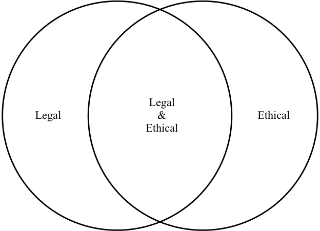

Learning Module 1 Ethics and Trust in the Investment Profession - Part 1: Introduction
Volume 10: Ethical and Professional Standards
Learning Module 1 Ethics and Trust in the Investment Profession
Part 1/2: Introduction (PDF Pages 17–31)
Tập 10: Các Chuẩn mực Đạo đức và Nghề nghiệp (Ethical and Professional Standards)
Học phần 1: Đạo đức và Niềm tin trong Nghề Đầu tư (Ethics and Trust in the Investment Profession)
Phần 1/2: Giới thiệu (Introduction) (Trang PDF 17–31)
L E A R N I N G M O D U L E 1
H Ọ C P H Ầ N 1
Ethics and Trust in the Investment Profession
Đạo đức và Niềm tin trong Nghề Đầu tư (Ethics and Trust in the Investment Profession)
by Bidhan L. Parmar, PhD, Dorothy C. Kelly, CFA, Colin McLean, MBA, FIA, FSIP, Nitin Mehta, CFA, FSIP, and David B. Stevens, CIMC, CFA.
Tác giả: Bidhan L. Parmar, PhD, Dorothy C. Kelly, CFA, Colin McLean, MBA, FIA, FSIP, Nitin Mehta, CFA, FSIP, và David B. Stevens, CIMC, CFA.
Bidhan L. Parmar, PhD, is at the University of Virginia (USA). Dorothy C. Kelly, CFA, is at McIntire School of Commerce, University of Virginia (USA). Colin McLean, MBA, FIA, FSIP, is at SVM Asset Management (United Kingdom). Nitin Mehta, CFA, FSIP (United Kingdom). David B. Stevens, CIMC, CFA, is at Wells Fargo Wealth Management (USA).
Bidhan L. Parmar, PhD, công tác tại Đại học Virginia (Hoa Kỳ). Dorothy C. Kelly, CFA, công tác tại Trường Thương mại McIntire, Đại học Virginia (Hoa Kỳ). Colin McLean, MBA, FIA, FSIP, công tác tại SVM Asset Management (Vương quốc Anh). Nitin Mehta, CFA, FSIP (Vương quốc Anh). David B. Stevens, CIMC, CFA, công tác tại Wells Fargo Wealth Management (Hoa Kỳ).
LEARNING OUTCOMES
KẾT QUẢ HỌC TẬP (LEARNING OUTCOMES)
| Mastery | The candidate should be able to: |
|---|---|
| explain ethics | |
| describe the role of a code of ethics in defining a profession | |
| describe professions and how they establish trust | |
| describe the need for high ethical standards in investment management |
|
| explain professionalism in investment management | |
| identify challenges to ethical behavior | |
| compare and contrast ethical standards with legal standards | |
| describe a framework for ethical decision making |
| Mức độ thành thạo | Ứng viên cần có khả năng: |
|---|---|
| giải thích về đạo đức (ethics) | |
| mô tả vai trò của bộ quy tắc đạo đức (code of ethics) trong việc định hình một nghề nghiệp (profession) | |
| mô tả các nghề nghiệp chuyên môn và cách thức chúng thiết lập niềm tin (trust) | |
| mô tả sự cần thiết của các chuẩn mực đạo đức cao trong ngành quản lý đầu tư (investment management) | |
| giải thích tính chuyên nghiệp (professionalism) trong quản lý đầu tư | |
| xác định các thách thức đối với hành vi đạo đức (ethical behavior) | |
| so sánh và đối chiếu các chuẩn mực đạo đức (ethical standards) với các chuẩn mực pháp lý (legal standards) | |
| mô tả một khung ra quyết định đạo đức (framework for ethical decision making) |
INTRODUCTION
GIỚI THIỆU (INTRODUCTION)
As a candidate in the CFA Program, you are both expected and required to meet high ethical standards. This reading introduces ideas and concepts that will help you understand the importance of ethical behavior in the investment industry. You will be introduced to various types of ethical issues within the investment profession and learn about the CFA Institute Code of Ethics.
Với tư cách là một ứng viên trong Chương trình CFA (CFA Program), bạn vừa được kỳ vọng vừa được yêu cầu phải đáp ứng các chuẩn mực đạo đức cao. Bài đọc này giới thiệu các ý tưởng và khái niệm giúp bạn hiểu được tầm quan trọng của hành vi đạo đức trong ngành đầu tư. Bạn sẽ được giới thiệu về nhiều loại vấn đề đạo đức khác nhau trong nghề đầu tư và tìm hiểu về Bộ Quy tắc Đạo đức của Viện CFA (CFA Institute Code of Ethics).
The readings covering ethics and professional standards demonstrate that ethical behavior is central to creating trust. Professional behavior is equally important. Professions help maintain trust in an industry by establishing codes and setting
Các bài đọc bao quát về đạo đức và các chuẩn mực nghề nghiệp chứng minh rằng hành vi đạo đức là yếu tố trọng tâm để tạo dựng niềm tin (trust). Hành vi chuyên nghiệp (professional behavior) cũng quan trọng không kém. Các nghề nghiệp chuyên môn giúp duy trì niềm tin trong một ngành bằng cách thiết lập các bộ quy tắc và đặt ra
standards that put a framework around ethical behavior and technical competence. Professions also set the wider goal of gaining and maintaining the trust of society as a whole. In this regard, professions have a sense of purpose that society values.
các chuẩn mực nhằm tạo dựng một khuôn khổ cho hành vi đạo đức và năng lực chuyên môn kỹ thuật (technical competence). Các nghề nghiệp chuyên môn cũng đặt ra mục tiêu rộng lớn hơn là giành được và duy trì niềm tin của toàn xã hội. Về phương diện này, các nghề nghiệp chuyên môn mang một ý thức về mục đích cao cả mà xã hội trân trọng.
Imagine that you are employed in the research department of a large financial services firm. You and your colleagues spend your days researching, analyzing, and valuing the shares of publicly traded companies and sharing your investment recommendations with clients. You love your work and take great satisfaction in knowing that your recommendations can help the firm’s investing clients make informed investment decisions that will help them meet their financial goals and improve their lives.
Hãy tưởng tượng bạn đang làm việc tại phòng nghiên cứu của một công ty dịch vụ tài chính lớn. Bạn và các đồng nghiệp dành cả ngày để nghiên cứu, phân tích và định giá cổ phiếu của các công ty đại chúng, đồng thời chia sẻ các khuyến nghị đầu tư (investment recommendations) của mình với khách hàng. Bạn yêu thích công việc của mình và cảm thấy vô cùng hài lòng khi biết rằng các khuyến nghị của bạn có thể giúp các khách hàng đầu tư của công ty đưa ra những quyết định đầu tư sáng suốt, giúp họ đạt được các mục tiêu tài chính và cải thiện cuộc sống.
Several months after starting at the firm, you learn that an analyst at the firm has been terminated for writing and publishing research reports that misrepresented the fundamental risks of some companies to investors. You learn that the analyst wrote the reports with the goal of pleasing the management of the companies that were the subjects of the research reports. He hoped that these companies would hire your firm’s investment banking division for its services and he would be rewarded with large bonuses for helping the firm increase its investment banking fees. Some clients bought shares based on the analyst’s reports and suffered losses. They posted stories on the internet about their losses and the misleading nature of the reports. When the media investigated and published the story, the firm’s reputation for investment research suffered. Investors began to question the firm’s motives and the objectivity of its research recommendations. The firm’s investment clients started to look elsewhere for investment advice, and company clients begin to transfer their business to firms with untarnished reputations. With business declining, management is forced to trim staff. Along with many other hard-working colleagues, you lose your job—through no fault of your own.
Vài tháng sau khi bắt đầu làm việc tại công ty, bạn biết tin một chuyên viên phân tích tại công ty đã bị sa thải vì viết và công bố các báo cáo nghiên cứu làm sai lệch các rủi ro cơ bản (fundamental risks) của một số công ty đối với các nhà đầu tư. Bạn biết được rằng chuyên viên phân tích đó đã viết các báo cáo với mục tiêu làm hài lòng ban giám đốc của các công ty là đối tượng trong báo cáo nghiên cứu. Anh ta hy vọng rằng các công ty này sẽ thuê bộ phận ngân hàng đầu tư (investment banking division) của công ty bạn cung cấp dịch vụ và anh ta sẽ được tưởng thưởng bằng những khoản tiền thưởng lớn vì đã giúp công ty gia tăng phí dịch vụ ngân hàng đầu tư. Một số khách hàng đã mua cổ phiếu dựa trên báo cáo của chuyên viên phân tích này và chịu thua lỗ. Họ đã đăng tải câu chuyện về khoản thua lỗ của mình và bản chất gây hiểu lầm của các báo cáo lên mạng internet. Khi giới truyền thông điều tra và công bố câu chuyện, danh tiếng về nghiên cứu đầu tư của công ty đã bị tổn hại. Các nhà đầu tư bắt đầu nghi ngờ động cơ của công ty và tính khách quan (objectivity) trong các khuyến nghị nghiên cứu của công ty. Các khách hàng đầu tư của công ty bắt đầu tìm kiếm lời khuyên đầu tư ở nơi khác, và các khách hàng doanh nghiệp bắt đầu chuyển hoạt động kinh doanh của họ sang các công ty có danh tiếng không bị hoen ố. Khi hoạt động kinh doanh sụt giảm, ban giám đốc buộc phải cắt giảm nhân sự. Cùng với nhiều đồng nghiệp chăm chỉ khác, bạn bị mất việc—dù không phải do lỗi của chính bạn.
Imagine how you would feel in this situation. Most people would feel upset and resentful that their hard and honest work was derailed by someone else’s unethical behavior. Yet, this type of scenario is not uncommon. Around the world, unsuspecting employees at such companies as SAC Capital, Stanford Financial Group, Everbright Securities, Enron, Satyam Computer Services, Arthur Andersen, and other large companies have experienced such career setbacks when someone else’s actions destroyed trust in their companies and industries.
Hãy tưởng tượng bạn sẽ cảm thấy thế nào trong tình huống này. Hầu hết mọi người sẽ cảm thấy buồn bã và phẫn nộ khi công việc chăm chỉ và trung thực của mình bị phá hỏng bởi hành vi phi đạo đức của người khác. Tuy nhiên, kịch bản kiểu này không phải là hiếm gặp. Trên khắp thế giới, những nhân viên không hề hay biết tại các công ty như SAC Capital, Stanford Financial Group, Everbright Securities, Enron, Satyam Computer Services, Arthur Andersen, và các công ty lớn khác đã phải trải qua những bước lùi sự nghiệp như vậy khi hành động của một ai đó phá hủy niềm tin vào công ty và ngành nghề của họ.
Businesses and financial markets thrive on trust—defined as a strong belief in the reliability of a person or institution. In a 2016 study on trust, investors indicated that to earn their trust, the top two attributes of an investment manager should be that it (1) has transparent and open business practices, and (2) has ethical business practices.1 Although these attributes are valued by customers and clients in any industry, this reading will explore why they are of particular importance to the investment industry.
Các doanh nghiệp và thị trường tài chính phát triển thịnh vượng dựa trên niềm tin (trust)—được định nghĩa là niềm tin vững chắc vào độ tin cậy của một cá nhân hoặc định chế. Trong một nghiên cứu năm 2016 về niềm tin, các nhà đầu tư chỉ ra rằng để giành được niềm tin của họ, hai thuộc tính hàng đầu của một nhà quản lý đầu tư phải là (1) có các thông lệ kinh doanh minh bạch và cởi mở, và (2) có các thông lệ kinh doanh có đạo đức.1 Mặc dù những thuộc tính này được khách hàng trong bất kỳ ngành nào coi trọng, bài đọc này sẽ khám phá lý do tại sao chúng lại có tầm quan trọng đặc biệt đối với ngành đầu tư.
People may think that ethical behavior is simply about following laws, regulations, and other rules, but throughout our lives and careers we will encounter situations in which there is no definitive rule that specifies how to act, or the rules that exist may be unclear or even in conflict with each other. Responsible people, including investment professionals, must be willing and able to identify potential ethical issues and create solutions to them even in the absence of clearly stated rules.
Mọi người có thể nghĩ rằng hành vi đạo đức đơn giản chỉ là việc tuân theo luật pháp, quy định và các quy tắc khác, nhưng trong suốt cuộc đời và sự nghiệp của mình, chúng ta sẽ gặp phải những tình huống mà ở đó không có quy tắc dứt khoát nào quy định cách thức hành xử, hoặc các quy tắc hiện hành có thể không rõ ràng hoặc thậm chí mâu thuẫn với nhau. Những người có trách nhiệm, bao gồm các chuyên gia đầu tư, phải sẵn sàng và có khả năng nhận diện các vấn đề đạo đức tiềm ẩn cũng như tạo ra các giải pháp cho chúng ngay cả khi không có các quy tắc được nêu rõ ràng.
1 CFA Institute From Trust to Loyalty: A Global Survey of What Investors Want (2013): http:// www .cfapubs .org/ doi/ pdf/ 10 .2469/ ccb .v2013 .n14 .1 .(2016): https:// www .cfainstitute .org/ research/ survey -reports/ from -trust -to -loyalty
1 CFA Institute, From Trust to Loyalty: A Global Survey of What Investors Want (2013): http:// www .cfapubs .org/ doi/ pdf/ 10 .2469/ ccb .v2013 .n14 .1 .(2016): https:// www .cfainstitute .org/ research/ survey -reports/ from -trust -to -loyalty
ETHICS
ĐẠO ĐỨC (ETHICS)
2
2
explain ethics
giải thích về đạo đức (ethics)
Through our individual actions, each of us can affect the lives of others. Our decisions and behavior can harm or benefit a variety of stakeholders —individuals or groups of individuals who could be affected either directly or indirectly by a decision and thus have an interest, or stake, in the decision. Examples of stakeholders in decisions made by investment industry professionals include our colleagues, our clients, our employers, the communities in which we live and work, the investment profession, trade associations, regulators, and other financial market participants. In some cases, our actions may benefit all of these stakeholder groups; in other cases, our actions may benefit only some stakeholder groups; and in still other cases, our actions may benefit some stakeholder groups and harm others. For example, recall the research analyst in the introduction who wrote misleading research reports with the aim of increasing the financial benefit to himself and his employer. In the very short term, his conduct seemed to directly benefit some stakeholders (certain clients, himself, and his employer) and to harm other stakeholders (clients who invested based on his reports). Over a longer time period, his conduct resulted in harm to himself and many other stakeholders—his employer, his employer’s clients, his colleagues, investors, and through loss of trust when the story was published, the larger financial market.
Thông qua các hành động cá nhân, mỗi người trong chúng ta đều có thể tác động đến cuộc sống của những người khác. Các quyết định và hành vi của chúng ta có thể gây hại hoặc mang lại lợi ích cho nhiều bên liên quan (stakeholders) —những cá nhân hoặc nhóm cá nhân có thể bị ảnh hưởng trực tiếp hoặc gián tiếp bởi một quyết định và do đó có mối quan tâm, hoặc quyền lợi (stake), trong quyết định đó. Ví dụ về các bên liên quan trong các quyết định được đưa ra bởi các chuyên gia trong ngành đầu tư bao gồm đồng nghiệp của chúng ta, khách hàng của chúng ta, chủ lao động (công ty) của chúng ta, cộng đồng nơi chúng ta sinh sống và làm việc, nghề đầu tư, các hiệp hội ngành nghề, các cơ quan quản lý và những người tham gia thị trường tài chính khác. Trong một số trường hợp, hành động của chúng ta có thể mang lại lợi ích cho tất cả các nhóm bên liên quan này; trong các trường hợp khác, hành động của chúng ta có thể chỉ mang lại lợi ích cho một số nhóm bên liên quan; và trong những trường hợp khác nữa, hành động của chúng ta có thể mang lại lợi ích cho một số nhóm bên liên quan và gây hại cho những nhóm khác. Ví dụ, hãy nhớ lại chuyên viên phân tích nghiên cứu ở phần giới thiệu, người đã viết các báo cáo nghiên cứu gây hiểu lầm với mục đích gia tăng lợi ích tài chính cho bản thân và chủ lao động của mình. Trong khoảng thời gian rất ngắn hạn, hành vi của anh ta dường như mang lại lợi ích trực tiếp cho một số bên liên quan (một số khách hàng nhất định, bản thân anh ta và chủ lao động của anh ta) và gây hại cho các bên liên quan khác (những khách hàng đã đầu tư dựa trên báo cáo của anh ta). Trong khoảng thời gian dài hơn, hành vi của anh ta đã dẫn đến tổn hại cho chính bản thân anh ta và nhiều bên liên quan khác—chủ lao động của anh ta, khách hàng của chủ lao động, đồng nghiệp của anh ta, các nhà đầu tư, và thông qua sự sụt giảm niềm tin khi câu chuyện được công bố, toàn bộ thị trường tài chính rộng lớn hơn.
Ethics encompasses a set of moral principles and rules of conduct that provide guidance for our behavior. The word “ethics” comes from the Greek word “ethos,” meaning character, used to describe the guiding beliefs or ideals characterizing a society or societal group. Beliefs are assumptions or thoughts we hold to be true. A principle is defined as a belief or fundamental truth that serves as the foundation for a system of belief or behavior or a chain of reasoning. Our beliefs form our values— those things we deem to have worth or merit.
Đạo đức (Ethics) bao gồm một tập hợp các nguyên tắc đạo lý (moral principles) và quy tắc ứng xử (rules of conduct) nhằm cung cấp sự hướng dẫn cho hành vi của chúng ta. Từ “ethics” bắt nguồn từ tiếng Hy Lạp “ethos”, có nghĩa là phẩm cách (character), được sử dụng để mô tả những niềm tin hoặc lý tưởng định hướng đặc trưng cho một xã hội hoặc một nhóm xã hội. Niềm tin (beliefs) là những giả định hoặc suy nghĩ mà chúng ta cho là đúng. Một nguyên tắc (principle) được định nghĩa là một niềm tin hoặc chân lý cơ bản đóng vai trò làm nền tảng cho một hệ thống niềm tin hay hành vi hoặc một chuỗi lập luận. Niềm tin của chúng ta hình thành nên các giá trị (values) của chúng ta—những điều mà chúng ta cho là có giá trị hoặc xứng đáng.
Moral principles or ethical principles are beliefs regarding what is good, acceptable, or obligatory behavior and what is bad, unacceptable, or forbidden behavior. Ethical principles may refer to beliefs regarding behavior that an individual expects of himself or herself, as well as shared beliefs regarding standards of behavior expected or required by a community or societal group.
Các nguyên tắc đạo lý (Moral principles) hay các nguyên tắc đạo đức (ethical principles) là những niềm tin về việc đâu là hành vi tốt, có thể chấp nhận được hoặc bắt buộc phải làm, và đâu là hành vi xấu, không thể chấp nhận được hoặc bị cấm đoán. Các nguyên tắc đạo đức có thể đề cập đến những niềm tin về hành vi mà một cá nhân tự kỳ vọng ở chính bản thân mình, cũng như những niềm tin chung về các chuẩn mực hành vi được kỳ vọng hoặc yêu cầu bởi một cộng đồng hoặc một nhóm xã hội.
The study of ethics examines the role of consequences and personal character in defining what is considered good, or ethical, conduct.
Việc nghiên cứu đạo đức xem xét vai trò của hệ quả (consequences) và phẩm cách cá nhân (personal character) trong việc xác định đâu là hành vi được coi là tốt, hay có đạo đức.
Ethical conduct is behavior that follows moral principles and balances self-interest with both the direct and the indirect consequences of the behavior on others. Ethical actions are those actions that are perceived as beneficial and conforming to the ethical expectations of society. An action may be considered beneficial if it improves the outcomes or consequences for stakeholders affected by the action. Telling the truth about the risks or costs associated with a recommended investment, for example, is an ethical action—that is, one that conforms to the ethical expectations of society in general and clients in particular. Telling the truth is also beneficial; telling the truth builds trust with customers and clients and enables them to make more informed decisions, which should lead to better outcomes for them and higher levels of client/ customer satisfaction for you and your employer.
Hành vi đạo đức (ethical conduct) là hành vi tuân theo các nguyên tắc đạo lý và cân bằng lợi ích cá nhân (self-interest) với cả những hệ quả trực tiếp và gián tiếp của hành vi đó đối với người khác. Các hành động có đạo đức (ethical actions) là những hành động được nhìn nhận là mang lại lợi ích và phù hợp với các kỳ vọng đạo đức của xã hội. Một hành động có thể được coi là mang lại lợi ích nếu nó cải thiện kết quả hoặc hệ quả cho các bên liên quan chịu ảnh hưởng bởi hành động đó. Ví dụ, việc nói sự thật về các rủi ro hoặc chi phí gắn liền với một khoản đầu tư được khuyến nghị là một hành động có đạo đức—tức là một hành động phù hợp với các kỳ vọng đạo đức của xã hội nói chung và của khách hàng nói riêng. Việc nói sự thật cũng mang lại lợi ích; nói sự thật giúp xây dựng niềm tin với khách hàng và cho phép họ đưa ra các quyết định sáng suốt hơn, điều này sẽ dẫn đến kết quả tốt hơn cho họ và mức độ hài lòng của khách hàng cao hơn đối với bạn và chủ lao động của bạn.
Widely acknowledged ethical principles include honesty, transparency, fairness or justice, diligence, and respect for the rights of others. Most societal groups share these fundamental ethical principles and build on them, establishing a shared set of rules regarding how members should behave in certain situations. The principles or rules may take different forms depending on the community establishing them.
Các nguyên tắc đạo đức được thừa nhận rộng rãi bao gồm sự trung thực (honesty), tính minh bạch (transparency), sự công bằng hay công lý (fairness or justice), sự cẩn trọng (diligence), và sự tôn trọng quyền của người khác (respect for the rights of others). Hầu hết các nhóm xã hội đều chia sẻ những nguyên tắc đạo đức cơ bản này và xây dựng dựa trên chúng, thiết lập một bộ quy tắc chung về cách thức các thành viên nên hành xử trong những tình huống nhất định. Các nguyên tắc hoặc quy tắc có thể mang những hình thức khác nhau tùy thuộc vào cộng đồng thiết lập ra chúng.
Ethics and Trust in the Investment Profession
Đạo đức và Niềm tin trong Nghề Đầu tư (Ethics and Trust in the Investment Profession)
Governments and related entities, for example, may establish laws and/or regulations to reflect widely shared beliefs about obligatory and forbidden conduct. Laws and regulations are rules of conduct specified by a governing body, such as a legislature or a regulator, identifying how individuals and entities under its jurisdiction should behave in certain situations. Most countries have laws and regulations governing the investment industry and the conduct of its participants. Differences in laws may reflect differences in beliefs and values.
Ví dụ, các chính phủ và các tổ chức liên quan có thể thiết lập luật pháp và/hoặc các quy định (laws and/or regulations) để phản ánh những niềm tin được chia sẻ rộng rãi về hành vi bắt buộc và hành vi bị cấm. Luật pháp và quy định là các quy tắc ứng xử được chỉ định bởi một cơ quan quản lý nhà nước, chẳng hạn như cơ quan lập pháp hoặc cơ quan quản lý chuyên ngành (regulator), xác định cách thức các cá nhân và pháp nhân thuộc thẩm quyền tài phán của họ phải hành xử trong những tình huống nhất định. Hầu hết các quốc gia đều có luật pháp và quy định điều chỉnh ngành đầu tư và hành vi của những người tham gia trong ngành. Sự khác biệt trong luật pháp có thể phản ánh sự khác biệt về niềm tin và giá trị.
In some countries, for example, the law requires that an investment adviser act in the best interests of his or her clients. Other countries require that investment professionals recommend investments that are suitable for their clients. These differing requirements can also hold true within one country where some advisers are held to a suitability standard and others to the fiduciary standard of the client’s best interests. Investment advisers and portfolio managers who are required by law to act in their clients’ best interests must always put their clients’ interests ahead of their own or their employers’ interests. An investment adviser who is required by law to act in a client’s best interest must understand the client’s financial objectives and risk tolerance, research and investigate multiple investment opportunities, and recommend the investment or investment portfolio that is most suitable for the client in terms of meeting his or her long-term financial objectives. In addition, the investment adviser would be expected to monitor the client’s financial situation and investments to ensure that the investments recommended remain the best overall option for meeting the client’s long-term financial objectives. In countries with only a suitability requirement, it is legal for investment professionals to recommend a suitable investment to a client even if other, similar suitable investments with lower fees are available. These differences in laws reflect differences in beliefs and values.
Ví dụ, ở một số quốc gia, luật pháp yêu cầu cố vấn đầu tư (investment adviser) phải hành động vì lợi ích tốt nhất (best interests) của khách hàng. Các quốc gia khác lại yêu cầu các chuyên gia đầu tư khuyến nghị những khoản đầu tư phù hợp (suitable) cho khách hàng của họ. Những yêu cầu khác nhau này cũng có thể cùng tồn tại trong phạm vi một quốc gia, nơi một số cố vấn phải tuân theo chuẩn mực tính phù hợp (suitability standard) và những người khác phải tuân theo chuẩn mực ủy thác (fiduciary standard) vì lợi ích tốt nhất của khách hàng. Các cố vấn đầu tư và nhà quản lý danh mục đầu tư (portfolio managers) được luật pháp yêu cầu phải hành động vì lợi ích tốt nhất của khách hàng phải luôn đặt lợi ích của khách hàng lên trên lợi ích của chính họ hoặc của chủ lao động. Một cố vấn đầu tư được luật pháp yêu cầu hành động vì lợi ích tốt nhất của khách hàng phải hiểu rõ các mục tiêu tài chính (financial objectives) và mức độ chấp nhận rủi ro (risk tolerance) của khách hàng, nghiên cứu và khảo sát nhiều cơ hội đầu tư, đồng thời khuyến nghị khoản đầu tư hoặc danh mục đầu tư phù hợp nhất (most suitable) cho khách hàng xét về việc đáp ứng các mục tiêu tài chính dài hạn của họ. Ngoài ra, cố vấn đầu tư cũng được kỳ vọng sẽ giám sát tình hình tài chính và các khoản đầu tư của khách hàng để đảm bảo rằng các khoản đầu tư được khuyến nghị vẫn là lựa chọn tổng thể tốt nhất nhằm đáp ứng các mục tiêu tài chính dài hạn của khách hàng. Tại các quốc gia chỉ có yêu cầu về tính phù hợp (suitability requirement), việc các chuyên gia đầu tư khuyến nghị một khoản đầu tư phù hợp cho khách hàng là hợp pháp ngay cả khi có sẵn các khoản đầu tư phù hợp tương tự khác với mức phí thấp hơn. Những sự khác biệt trong luật pháp này phản ánh sự khác biệt về niềm tin và giá trị.
Specific communities or societal groups in which we live and work sometimes codify their beliefs about obligatory and forbidden conduct in a written set of principles, often called a code of ethics . Universities, employers, and professional associations often adopt a code of ethics to communicate the organization’s values and overall expectations regarding member behavior. The code of ethics serves as a general guide for how community members should act. Some communities will also expand on their codes of ethics and adopt explicit rules or standards that identify specific behaviors required of community members. These standards of conduct serve as benchmarks for the minimally acceptable behavior of community members and can help clarify the code of ethics. Members can choose behaviors that demonstrate even higher standards. By joining the community, members are agreeing to adhere to the community’s code of ethics and standards of conduct. To promote their code of ethics and reduce the incidence of violations, communities frequently display their codes in prominent locations and in written materials. In addition, most communities require that members commit to their codes in writing on an annual or more frequent basis.
Các cộng đồng hoặc nhóm xã hội cụ thể nơi chúng ta sinh sống và làm việc đôi khi hệ thống hóa niềm tin của họ về hành vi bắt buộc và bị cấm thành một tập hợp các nguyên tắc bằng văn bản, thường được gọi là bộ quy tắc đạo đức (code of ethics). Các trường đại học, chủ lao động và các hiệp hội nghề nghiệp thường thông qua một bộ quy tắc đạo đức để truyền đạt các giá trị của tổ chức và những kỳ vọng chung về hành vi của các thành viên. Bộ quy tắc đạo đức đóng vai trò như một hướng dẫn chung về cách thức các thành viên trong cộng đồng nên hành động. Một số cộng đồng cũng sẽ mở rộng bộ quy tắc đạo đức của họ và thông qua các quy tắc hoặc chuẩn mực rõ ràng nhằm xác định các hành vi cụ thể được yêu cầu đối với các thành viên cộng đồng. Các chuẩn mực ứng xử (standards of conduct) này đóng vai trò là thước đo chuẩn (benchmarks) cho mức hành vi tối thiểu có thể chấp nhận được của các thành viên cộng đồng và có thể giúp làm rõ bộ quy tắc đạo đức. Các thành viên có thể lựa chọn những hành vi thể hiện các chuẩn mực thậm chí còn cao hơn. Bằng việc gia nhập cộng đồng, các thành viên đồng ý tuân thủ bộ quy tắc đạo đức và các chuẩn mực ứng xử của cộng đồng đó. Để thúc đẩy bộ quy tắc đạo đức và giảm thiểu tỷ lệ vi phạm, các cộng đồng thường trưng bày bộ quy tắc của mình ở những vị trí trang trọng dễ thấy và trong các tài liệu văn bản. Ngoài ra, hầu hết các cộng đồng đều yêu cầu các thành viên cam kết tuân thủ bộ quy tắc của họ bằng văn bản định kỳ hàng năm hoặc thường xuyên hơn.
Violations of a community’s established code of ethics and/or standards of conduct can harm the community in a variety of ways. Violations have the potential to damage the community’s reputation among external stakeholders and the general public. Violations can also damage the community’s reputation internally and lead to reduced trust among community members and can cause the organization to fracture or splinter from within. To protect the reputation of its membership and limit potential harm to innocent members, the community may take corrective actions to investigate possible violations, repair any damages, and attempt to discipline the violator or, in severe cases, revoke the violator’s membership in the community.
Các hành vi vi phạm bộ quy tắc đạo đức và/hoặc các chuẩn mực ứng xử đã được thiết lập của một cộng đồng có thể gây hại cho cộng đồng đó theo nhiều cách khác nhau. Các vi phạm có khả năng làm tổn hại đến danh tiếng của cộng đồng trong mắt các bên liên quan bên ngoài và công chúng nói chung. Các vi phạm cũng có thể làm tổn hại đến danh tiếng của cộng đồng trong nội bộ và dẫn đến sự suy giảm niềm tin giữa các thành viên cộng đồng, đồng thời có thể khiến tổ chức bị rạn nứt hoặc chia rẽ từ bên trong. Để bảo vệ danh tiếng của các thành viên và hạn chế tổn hại tiềm tàng đối với những thành viên vô tội, cộng đồng có thể thực hiện các hành động khắc phục để điều tra các vi phạm có thể xảy ra, đền bù thiệt hại, và tìm cách kỷ luật người vi phạm hoặc, trong những trường hợp nghiêm trọng, thu hồi tư cách thành viên của người vi phạm trong cộng đồng.
| EXAMPLE 1 |
|---|
| Ethics |
| 1. Which of the following statements is_most_accurate? Ethics can be described as: |
| A.a commitment to upholding the law. |
| B.an individual’s personal opinion about right and wrong. C.a set of moral principles that provide guidance for our behavior. |
| Solution: |
| C is correct. Ethics can be described as a set of moral principles that provide guidance for our behavior; these may be moral principles shared by a com- munity or societal group. |
| 2. Which of the following statements is_most_accurate? Standards of conduct: A.are a necessary component of any code of ethics. B.serve as a general guide regarding proper conduct by members of a group. |
| C.serve as benchmarks for the minimally acceptable behavior required of members of a group. |
| Solution: |
| C is correct. Standards of conduct serve as benchmarks for the minimally acceptable behavior required of members of a group. Some organizations will adopt only a code of ethics, which communicates the organization’s values and overall expectations regarding member behavior. Others may adopt both a code of ethics and standards of conduct. Standards of conduct identify specific behavior required of community members and serve as benchmarks for the minimally acceptable behavior of community members. |
| VÍ DỤ 1 (EXAMPLE 1) |
|---|
| Đạo đức (Ethics) |
| 1. Phát biểu nào sau đây là chính xác nhất? Đạo đức (Ethics) có thể được mô tả là: |
| A. một sự cam kết tuân thủ pháp luật. |
| B. ý kiến cá nhân của một người về đúng và sai. C. một tập hợp các nguyên tắc đạo lý cung cấp sự hướng dẫn cho hành vi của chúng ta. |
| Lời giải (Solution): |
| C là đáp án đúng. Đạo đức có thể được mô tả là một tập hợp các nguyên tắc đạo lý (moral principles) cung cấp sự hướng dẫn cho hành vi của chúng ta; đây có thể là các nguyên tắc đạo lý được chia sẻ bởi một cộng đồng hoặc một nhóm xã hội. |
| 2. Phát biểu nào sau đây là chính xác nhất? Các chuẩn mực ứng xử (Standards of conduct): A. là một cấu phần bắt buộc phải có của bất kỳ bộ quy tắc đạo đức nào. B. đóng vai trò là hướng dẫn chung về hành vi đúng đắn của các thành viên trong một nhóm. |
| C. đóng vai trò là các thước đo chuẩn (benchmarks) cho mức hành vi tối thiểu có thể chấp nhận được mà các thành viên trong một nhóm được yêu cầu phải tuân theo. |
| Lời giải (Solution): |
| C là đáp án đúng. Các chuẩn mực ứng xử (standards of conduct) đóng vai trò là thước đo chuẩn cho mức hành vi tối thiểu có thể chấp nhận được mà các thành viên của một nhóm được yêu cầu phải thực hiện. Một số tổ chức sẽ chỉ thông qua một bộ quy tắc đạo đức (code of ethics), dùng để truyền đạt các giá trị của tổ chức và kỳ vọng chung về hành vi của thành viên. Những tổ chức khác có thể thông qua cả bộ quy tắc đạo đức và các chuẩn mực ứng xử. Các chuẩn mực ứng xử xác định hành vi cụ thể được yêu cầu đối với các thành viên cộng đồng và đóng vai trò là thước đo chuẩn cho hành vi tối thiểu có thể chấp nhận được của các thành viên cộng đồng. |
ETHICS AND PROFESSIONALISM 3
ĐẠO ĐỨC VÀ TÍNH CHUYÊN NGHIỆP (ETHICS AND PROFESSIONALISM) 3
describe the role of a code of ethics in defining a profession describe professions and how they establish trust describe the need for high ethical standards in investment management explain professionalism in investment management
mô tả vai trò của bộ quy tắc đạo đức trong việc định hình một nghề nghiệp; mô tả các nghề nghiệp chuyên môn và cách thức chúng thiết lập niềm tin; mô tả sự cần thiết của các chuẩn mực đạo đức cao trong ngành quản lý đầu tư; giải thích tính chuyên nghiệp trong quản lý đầu tư
A profession is an occupational community that has specific education, expert knowledge, and a framework of practice and behavior that underpins community trust, respect, and recognition. Most professions emphasize an ethical approach, the importance of good service, and empathy with the client.
Một nghề nghiệp chuyên môn (profession) là một cộng đồng nghề nghiệp có nền tảng giáo dục cụ thể, kiến thức chuyên gia (expert knowledge), cùng một khuôn khổ thực hành và hành vi làm nền tảng cho niềm tin, sự tôn trọng và sự công nhận của cộng đồng. Hầu hết các nghề nghiệp chuyên môn đều nhấn mạnh cách tiếp cận có đạo đức, tầm quan trọng của dịch vụ tốt và sự thấu cảm (empathy) với khách hàng.
Professions have grown in size and number over the last century: the rise of new specialist areas of expertise has created new professions. Driving forces of a new profession include governments and regulators, which encourage the formation of an
Các nghề nghiệp chuyên môn đã phát triển cả về quy mô lẫn số lượng trong thế kỷ qua: sự trỗi dậy của các lĩnh vực chuyên môn mới đã tạo ra những nghề nghiệp mới. Các động lực thúc đẩy sự hình thành một nghề nghiệp chuyên môn mới bao gồm các chính phủ và cơ quan quản lý, những chủ thể khuyến khích việc hình thành một
ethical relationship between professionals and society at large. There is also demand for professions from individuals who see an advantage in working as a professional and from clients who desire to work with professionals.
mối quan hệ có đạo đức giữa những người hành nghề chuyên nghiệp (professionals) và toàn xã hội. Ngoài ra còn có nhu cầu về các nghề nghiệp chuyên môn từ những cá nhân nhìn thấy lợi thế khi làm việc với tư cách là một chuyên gia và từ những khách hàng mong muốn được làm việc với các chuyên gia.
Professions have not developed in every country. But in most countries, those who work in specialized areas—such as doctors, lawyers, actuaries, accountants, architects, and engineers—are subject to some combination of licensed status and technical standards. These standards distinguish professions from the craft guilds and trade bodies that were established in many countries. In particular, the requirement for members of professions to uphold high ethical standards is one clear difference. Another difference is that trade bodies do not normally have a mission to serve society or to set and enforce professional conduct rules for practitioners.
Các nghề nghiệp chuyên môn không phát triển ở tất cả mọi quốc gia. Nhưng ở hầu hết các quốc gia, những người làm việc trong các lĩnh vực chuyên biệt—chẳng hạn như bác sĩ, luật sư, chuyên gia định phí bảo hiểm (actuaries), kế toán viên, kiến trúc sư và kỹ sư—đều phải chịu sự điều chỉnh kết hợp ở một mức độ nào đó giữa quy chế cấp phép hành nghề (licensed status) và các chuẩn mực kỹ thuật (technical standards). Những chuẩn mực này phân biệt các nghề nghiệp chuyên môn với các phường hội thủ công (craft guilds) và các hiệp hội thương mại (trade bodies) từng được thành lập ở nhiều quốc gia. Đặc biệt, yêu cầu các thành viên của nghề nghiệp chuyên môn phải duy trì các chuẩn mực đạo đức cao là một điểm khác biệt rõ rệt. Một điểm khác biệt nữa là các hiệp hội thương mại thông thường không có sứ mệnh phụng sự xã hội hoặc thiết lập và thực thi các quy tắc ứng xử nghề nghiệp đối với những người hành nghề.
How Professions Establish Trust
Cách thức Các Nghề nghiệp Chuyên môn Thiết lập Niềm tin (How Professions Establish Trust)
For a profession to be credible, a primary goal is to establish trust among clients and among society in general. In doing so, professions have a number of common characteristics that, when combined, greatly increase confidence and credibility in professionals and their organizations.
Để một nghề nghiệp chuyên môn có được sự tín nhiệm (credible), mục tiêu hàng đầu là phải thiết lập được niềm tin nơi khách hàng và trong xã hội nói chung. Để làm được điều đó, các nghề nghiệp chuyên môn có một số đặc điểm chung mà khi kết hợp lại sẽ làm gia tăng đáng kể sự tự tin và uy tín đối với các chuyên gia cũng như tổ chức của họ.
Professions normalize practitioner behavior.
_Các nghề nghiệp chuyên môn chuẩn hóa hành vi của người hành nghề (Professions normalize practitioner behavior)._
Professionalism is underpinned by codes and standards developed by professional bodies. Regulators typically support professional ethics and recognize the framework for ethics that professions can provide. Many regulators around the world have engaged closely with professional bodies to understand their codes and standards, as well as how they are enforced. Codes and standards developed by practitioners can be complementary to regulations, codifying many more individual practices than the high-level principles set by regulation.
Tính chuyên nghiệp (professionalism) được xây dựng dựa trên nền tảng là các bộ quy tắc và chuẩn mực do các tổ chức nghề nghiệp (professional bodies) phát triển. Các cơ quan quản lý nhà nước thường ủng hộ đạo đức nghề nghiệp và công nhận khuôn khổ đạo đức mà các nghề nghiệp chuyên môn có thể mang lại. Nhiều cơ quan quản lý trên khắp thế giới đã phối hợp chặt chẽ với các tổ chức nghề nghiệp để hiểu rõ các bộ quy tắc và chuẩn mực của họ, cũng như cách thức chúng được thực thi. Các bộ quy tắc và chuẩn mực do những người hành nghề phát triển có thể bổ trợ cho các quy định pháp luật, hệ thống hóa nhiều thông lệ thực hành cụ thể hơn so với các nguyên tắc cấp cao do quy định pháp luật đặt ra.
Many governments have recognized that a profession can develop a more sophisticated system of standards than a regulator can, via continuous practitioner input and a strong mutual interest within the profession to maintain good standards and adopt best practices. Government support of professions is attributable to the role of professions in helping the public and ensuring expert and principled performance of complex services.
Nhiều chính phủ đã nhận ra rằng một nghề nghiệp chuyên môn có thể phát triển một hệ thống chuẩn mực tinh vi hơn so với cơ quan quản lý nhà nước, thông qua sự đóng góp ý kiến liên tục của những người hành nghề và lợi ích chung mạnh mẽ trong nội bộ ngành nghề nhằm duy trì các chuẩn mực tốt và áp dụng các thông lệ tốt nhất (best practices). Sự ủng hộ của chính phủ đối với các nghề nghiệp chuyên môn xuất phát từ vai trò của chúng trong việc giúp đỡ công chúng và đảm bảo việc thực hiện các dịch vụ phức tạp một cách có chuyên môn và có nguyên tắc.
Professions provide a service to society.
_Các nghề nghiệp chuyên môn cung cấp dịch vụ cho xã hội (Professions provide a service to society)._
There is an obligation for professionals to go beyond codes and standards. Professionals should advocate for higher educational and ethical standards in the industry, individually and through their companies. Professions can widen access to services and support economic activity by encouraging trust in the industries they serve. Professions have realized that earning community trust not only creates professional pride and acceptance but also delivers commercial benefits. A profession that earns trust may ultimately have greater flexibility and independence from government regulators to manage its own affairs, which allows members of the profession to develop service models that are both useful to clients and beneficial to members.
Các chuyên gia có nghĩa vụ phải vượt lên trên cả các bộ quy tắc và chuẩn mực. Các chuyên gia cần vận động (advocate) cho các chuẩn mực giáo dục và đạo đức cao hơn trong ngành, cả với tư cách cá nhân lẫn thông qua công ty của họ. Các nghề nghiệp chuyên môn có thể mở rộng khả năng tiếp cận dịch vụ và hỗ trợ hoạt động kinh tế bằng cách khuyến khích niềm tin vào các ngành mà chúng phục vụ. Các nghề nghiệp chuyên môn đã nhận ra rằng việc giành được niềm tin của cộng đồng không chỉ tạo ra niềm tự hào nghề nghiệp và sự chấp nhận của xã hội mà còn mang lại những lợi ích thương mại. Một nghề nghiệp chuyên môn giành được niềm tin cuối cùng có thể có được sự linh hoạt và tính độc lập lớn hơn khỏi các cơ quan quản lý chính phủ để tự quản lý các công việc của mình, điều này cho phép các thành viên trong nghề phát triển các mô hình dịch vụ vừa hữu ích cho khách hàng vừa có lợi cho các thành viên.
Professions are client focused.
_Các nghề nghiệp chuyên môn lấy khách hàng làm trung tâm (Professions are client focused)._
An integral part of a profession’s mission is to develop and administer codes, best practice guidelines, and standards that guide an industry. These codes, standards, and guidelines help ensure that all professionals place the integrity of their profession and the interests of clients above their own personal interests. At a minimum, professionals must act in the best interest of the client, exercising a reasonable level of care, skill, and diligence. The obligation to deliver a high standard of care when acting for the benefit of another party is called fiduciary duty . Other entities, including employers,
Một phần không thể thiếu trong sứ mệnh của một nghề nghiệp chuyên môn là phát triển và quản lý các bộ quy tắc, hướng dẫn thông lệ tốt nhất (best practice guidelines), và các chuẩn mực định hướng cho một ngành. Các bộ quy tắc, chuẩn mực và hướng dẫn này giúp đảm bảo rằng tất cả các chuyên gia đều đặt sự liêm chính của nghề nghiệp (integrity of their profession) và lợi ích của khách hàng lên trên lợi ích cá nhân của chính họ. Ở mức tối thiểu, các chuyên gia phải hành động vì lợi ích tốt nhất của khách hàng, thực hiện công việc với mức độ cẩn trọng (care), kỹ năng (skill) và sự siêng năng (diligence) hợp lý. Nghĩa vụ cung cấp một chuẩn mực cẩn trọng cao khi hành động vì lợi ích của một bên khác được gọi là nghĩa vụ ủy thác (fiduciary duty). Các chủ thể khác, bao gồm chủ lao động,
regulators, trade associations, and not-for-profit organizations, may also support an industry but are not the same as professional bodies. Unlike professions, these other entities generally do not exist to set and maintain professional standards. Most employers encourage employees to be members of relevant professions, and many give financial support for this membership to ideally improve the quality of client service and reinforce ethical awareness.
cơ quan quản lý, hiệp hội thương mại và các tổ chức phi lợi nhuận, cũng có thể hỗ trợ một ngành nhưng không giống như các tổ chức nghề nghiệp. Không giống như các nghề nghiệp chuyên môn, những chủ thể khác này nhìn chung không tồn tại nhằm mục đích thiết lập và duy trì các chuẩn mực nghề nghiệp. Hầu hết các chủ lao động đều khuyến khích nhân viên trở thành thành viên của các tổ chức nghề nghiệp có liên quan, và nhiều chủ lao động còn hỗ trợ tài chính cho tư cách thành viên này nhằm mục đích lý tưởng là cải thiện chất lượng dịch vụ khách hàng và củng cố nhận thức về đạo đức.
Professions have high entry standards.
_Các nghề nghiệp chuyên môn có tiêu chuẩn đầu vào cao (Professions have high entry standards)._
Membership in a profession is a signal to the market that the professional will deliver high-quality service of a promised standard, going beyond simply academic credentials. Professions develop curricula that equip future professionals with competence, including technical skills, knowledge, and ethics.
Tư cách thành viên trong một nghề nghiệp chuyên môn là một tín hiệu gửi tới thị trường rằng chuyên gia đó sẽ cung cấp dịch vụ chất lượng cao theo một chuẩn mực đã cam kết, vượt xa các bằng cấp học thuật đơn thuần. Các nghề nghiệp chuyên môn xây dựng các chương trình đào tạo (curricula) nhằm trang bị năng lực (competence) cho các chuyên gia tương lai, bao gồm kỹ năng kỹ thuật, kiến thức và đạo đức.
Professions possess a body of expert knowledge.
_Các nghề nghiệp chuyên môn sở hữu một kho tàng kiến thức chuyên gia (Professions possess a body of expert knowledge)._
A repository of knowledge, developed by experienced and skilled practitioners, is made available to all members of a profession. This knowledge helps members work effectively and ethically and is based on best practice.
Một kho lưu trữ kiến thức, được phát triển bởi những người hành nghề giàu kinh nghiệm và kỹ năng, được cung cấp cho tất cả các thành viên của một nghề nghiệp chuyên môn. Kiến thức này giúp các thành viên làm việc hiệu quả, có đạo đức và được dựa trên các thông lệ tốt nhất (best practice).
Professions encourage and facilitate continuing education.
_Các nghề nghiệp chuyên môn khuyến khích và tạo điều kiện cho việc đào tạo liên tục (Professions encourage and facilitate continuing education)._
Entry into a profession does not, on its own, guarantee that an individual will maintain competency and continue to uphold professional standards. After qualification and throughout the working life of a professional, there will be changes in knowledge and technical skills to perform certain jobs, in technology and standards of ethical behavior, in services that can be offered, and in the legal and business environment in which professional services are delivered. These all require the development of competence and ethical awareness. Most professional bodies make it a condition of membership that a specific amount of new learning is undertaken each year. Typically, such conditions specify a time commitment, which may be separated into different competencies and types of learning activity. This is often referred to as continuing professional development and is seen as an important part of maintaining professional standards. The training and education that professionals undertake increase the value of human capital, which can contribute to economic growth and social mobility.
Việc gia nhập vào một nghề nghiệp chuyên môn tự bản thân nó không đảm bảo rằng một cá nhân sẽ duy trì được năng lực và tiếp tục giữ vững các chuẩn mực nghề nghiệp. Sau khi đạt chứng chỉ và trong suốt cuộc đời làm việc của một chuyên gia, sẽ có những thay đổi về kiến thức và kỹ năng kỹ thuật để thực hiện một số công việc nhất định, về công nghệ và các chuẩn mực hành vi đạo đức, về các dịch vụ có thể cung cấp, cũng như về môi trường pháp lý và kinh doanh nơi các dịch vụ chuyên nghiệp được thực hiện. Tất cả những điều này đòi hỏi sự phát triển năng lực và nhận thức đạo đức. Hầu hết các tổ chức nghề nghiệp đều đặt ra điều kiện duy trì tư cách thành viên là phải thực hiện một khối lượng học tập mới nhất định mỗi năm. Thông thường, các điều kiện như vậy quy định một cam kết về thời gian, có thể được tách thành các năng lực và loại hình hoạt động học tập khác nhau. Điều này thường được gọi là phát triển chuyên môn liên tục (continuing professional development – CPD) và được xem là một phần quan trọng của việc duy trì các chuẩn mực nghề nghiệp. Quá trình đào tạo và giáo dục mà các chuyên gia thực hiện làm gia tăng giá trị vốn nhân lực (human capital), qua đó có thể đóng góp vào tăng trưởng kinh tế và sự dịch chuyển xã hội (social mobility).
Professions monitor professional conduct.
_Các nghề nghiệp chuyên môn giám sát hành vi nghề nghiệp (Professions monitor professional conduct)._
Members of a profession must be held accountable for their conduct to maintain the integrity and reputation of an industry. Doing so often involves self-regulation by professional bodies through monitoring and imposition of sanctions on members.
Các thành viên của một nghề nghiệp chuyên môn phải chịu trách nhiệm giải trình (accountable) về hành vi của mình nhằm duy trì sự liêm chính và danh tiếng của ngành. Việc làm này thường bao gồm cơ chế tự quản (self-regulation) bởi các tổ chức nghề nghiệp thông qua hoạt động giám sát và áp dụng các chế tài xử phạt (sanctions) đối với các thành viên.
Professions are collegial.
_Các nghề nghiệp chuyên môn có tính đồng nghiệp gắn kết (Professions are collegial)._
Professionals should be respectful to each other, even when they are competing. At the very least, they must respect the rights, dignity, and autonomy of others.
Các chuyên gia cần tôn trọng lẫn nhau, ngay cả khi họ đang cạnh tranh. Ở mức tối thiểu, họ phải tôn trọng quyền, phẩm giá và quyền tự chủ của người khác.
Professions are recognized oversight bodies.
_Các nghề nghiệp chuyên môn là các cơ quan giám sát được công nhận (Professions are recognized oversight bodies)._
Many professional bodies are not-for-profit organizations with a mission emphasizing excellence, integrity, and public service. Although it is the responsibility of individual professionals to remain competent, an oversight body typically monitors this responsibility. Such bodies provide individuals with ongoing educational resources and access to information about changes in standards and imposes a framework of discipline. Continuing membership indicates sustained competence in (and updating of) practical skills while maintaining ongoing compliance with an ethical code of conduct.
Nhiều tổ chức nghề nghiệp là các tổ chức phi lợi nhuận với sứ mệnh nhấn mạnh vào sự xuất sắc, tính liêm chính và phục vụ công chúng. Mặc dù việc duy trì năng lực là trách nhiệm của từng cá nhân chuyên gia, một cơ quan giám sát thường theo dõi việc thực hiện trách nhiệm này. Các tổ chức như vậy cung cấp cho các cá nhân nguồn tài nguyên giáo dục liên tục và quyền tiếp cận thông tin về những thay đổi trong các chuẩn mực, đồng thời áp đặt một khuôn khổ kỷ luật. Việc duy trì tư cách thành viên liên tục cho thấy năng lực bền vững trong (và sự cập nhật của) các kỹ năng thực tiễn song song với việc duy trì sự tuân thủ liên tục đối với bộ quy tắc ứng xử đạo đức.
Professions encourage the engagement of members.
_Các nghề nghiệp chuyên môn khuyến khích sự gắn kết tham gia của các thành viên (Professions encourage the engagement of members)._
Participation by members as volunteers is part of the essence of a profession. Professionals are more likely to refer to, use, and adhere to values that they have helped develop, and they typically have the power as members to revise these values. A good professional will want to mentor and inspire others who recently entered or wish to enter the profession. Professionals should be willing to volunteer to advance the profession and engage with peers to develop expertise and ethics. Professionals should volunteer to help educate new generations in ethical knowledge and ethical decision making and to foster a productive debate about new areas of ethics. Most professionals find that the experience of volunteering within the profession enhances their skills and widens their contacts within the industry. Membership in a professional body allows the necessary engagement with other professionals.
Sự tham gia của các thành viên với tư cách là tình nguyện viên là một phần bản chất của một nghề nghiệp chuyên môn. Các chuyên gia có nhiều khả năng tham chiếu, sử dụng và tuân thủ các giá trị mà chính họ đã góp phần xây dựng, và với tư cách là thành viên, họ thường có quyền sửa đổi các giá trị này. Một chuyên gia giỏi sẽ muốn cố vấn (mentor) và truyền cảm hứng cho những người mới gia nhập hoặc mong muốn gia nhập nghề nghiệp. Các chuyên gia nên sẵn sàng tình nguyện thúc đẩy sự phát triển của nghề nghiệp và gắn kết với các đồng nghiệp để phát triển chuyên môn và đạo đức. Các chuyên gia nên tình nguyện giúp giáo dục các thế hệ mới về kiến thức đạo đức và việc ra quyết định có đạo đức, đồng thời thúc đẩy các cuộc thảo luận hiệu quả về những lĩnh vực đạo đức mới. Hầu hết các chuyên gia đều nhận thấy rằng trải nghiệm làm tình nguyện viên trong ngành nghề giúp nâng cao kỹ năng và mở rộng mạng lưới quan hệ của họ trong ngành. Tư cách thành viên trong một tổ chức nghề nghiệp cho phép sự gắn kết cần thiết với các chuyên gia khác.
Professions Are Evolving
Các Nghề nghiệp Chuyên môn Đang Không ngừng Tiến hóa (Professions Are Evolving)
No profession stands still. Such trends as greater transparency and public accountability force professions to adapt to change. Meanwhile, technology opens up possibilities for new services and different ways of working. In addition, key processes of a profession’s responsibilities may need to be reviewed by a government agency or independent public body. In general, professions often engage with non-member individuals. This can help a profession evaluate the viewpoints of the public, clients, or other stakeholders when determining policy and practice and can encourage public trust for a profession’s conduct and disciplinary process.
Không có nghề nghiệp chuyên môn nào đứng yên tại chỗ. Những xu hướng như tính minh bạch cao hơn và trách nhiệm giải trình trước công chúng (public accountability) buộc các nghề nghiệp chuyên môn phải thích ứng với sự thay đổi. Trong khi đó, công nghệ mở ra những khả năng cho các dịch vụ mới và những phương thức làm việc khác nhau. Ngoài ra, các quy trình cốt lõi trong trách nhiệm của một nghề nghiệp chuyên môn có thể cần được rà soát bởi một cơ quan chính phủ hoặc một tổ chức công độc lập. Nhìn chung, các nghề nghiệp chuyên môn thường xuyên tương tác với những cá nhân không phải là thành viên. Điều này có thể giúp một nghề nghiệp chuyên môn đánh giá quan điểm của công chúng, khách hàng hoặc các bên liên quan khác khi xác định chính sách và thông lệ thực hành, đồng thời có thể khuyến khích niềm tin của công chúng đối với quy trình ứng xử và kỷ luật của nghề nghiệp đó.
Effective professions continue to develop their role to account for changing best practices. Some medical professional bodies, for instance, have been established for more than 500 years but may now have the same need to adapt as the much younger investment management profession. This means that at any point in time, society may recognize an area of work as a profession even if it has not fully or universally implemented all the expectations. As the requirements for a profession evolve, gaps open up that may take time to remedy. Effective professions also actively learn from other professions, particularly in the area of ethics. New standards of conduct in the accounting profession might be an influence on standards considered in investment management, for example.
Các nghề nghiệp chuyên môn hiệu quả tiếp tục phát triển vai trò của mình để tính đến những thông lệ tốt nhất đang thay đổi. Ví dụ, một số tổ chức nghề nghiệp y khoa đã được thành lập hơn 500 năm nhưng hiện nay có thể vẫn có cùng nhu cầu phải thích ứng giống như nghề quản lý đầu tư có tuổi đời còn non trẻ hơn rất nhiều. Điều này có nghĩa là tại bất kỳ thời điểm nào, xã hội có thể công nhận một lĩnh vực công việc là một nghề nghiệp chuyên môn ngay cả khi nó chưa thực hiện đầy đủ hoặc toàn diện tất cả các kỳ vọng. Khi các yêu cầu đối với một nghề nghiệp chuyên môn phát triển, những khoảng trống sẽ xuất hiện và có thể cần thời gian để khắc phục. Các nghề nghiệp chuyên môn hiệu quả cũng tích cực học hỏi từ các nghề nghiệp khác, đặc biệt là trong lĩnh vực đạo đức. Ví dụ, các chuẩn mực ứng xử mới trong nghề kế toán có thể có ảnh hưởng đến các chuẩn mực được xem xét trong ngành quản lý đầu tư.
Professionalism in Investment Management
Tính Chuyên nghiệp trong Quản lý Đầu tư (Professionalism in Investment Management)
Successful investing professionals are disciplined and consistent and they think a great deal about what they do and how they do it.
Các chuyên gia đầu tư thành công là những người có kỷ luật và nhất quán, đồng thời họ suy nghĩ rất nhiều về những gì họ làm và cách thức họ thực hiện điều đó.
—Benjamin Graham, The Intelligent Investor (1949)
—Benjamin Graham, Nhà Đầu tư Thông minh (The Intelligent Investor) (1949)
Investment management is a relatively young profession, which means that public understanding of its practice and codes is still developing. Recognition by regulators and employers also lags established professions. Not everyone engaged in investment management is a professional; some practitioners have not undertaken specific investment training or are not members of a professional body. That creates a challenge for the investment management profession to gain trust, because not all practitioners need to be committed to high ethical standards. However, key elements of the profession have been steadily established over several decades. For example, the publication of Graham and Dodd’s Security Analysis in 1934 was an important step in establishing a body of knowledge for investment.
Quản lý đầu tư là một nghề nghiệp tương đối non trẻ, điều đó có nghĩa là sự hiểu biết của công chúng về thông lệ thực hành và các bộ quy tắc của nghề vẫn đang trong quá trình phát triển. Sự công nhận từ phía các cơ quan quản lý và chủ lao động cũng đi sau các nghề nghiệp lâu đời. Không phải ai tham gia vào hoạt động quản lý đầu tư cũng là một nhà chuyên môn (professional); một số người hành nghề chưa từng trải qua quá trình đào tạo đầu tư chuyên biệt hoặc không phải là thành viên của một tổ chức nghề nghiệp. Điều đó tạo ra một thách thức cho nghề quản lý đầu tư trong việc giành lấy niềm tin, bởi vì không phải tất cả những người hành nghề đều buộc phải cam kết tuân thủ các chuẩn mực đạo đức cao. Tuy nhiên, các yếu tố cốt lõi của nghề nghiệp này đã được thiết lập vững chắc qua nhiều thập kỷ. Ví dụ, việc xuất bản cuốn Phân tích Chứng khoán (Security Analysis) của Graham và Dodd vào năm 1934 là một bước tiến quan trọng trong việc thiết lập một kho tàng kiến thức (body of knowledge) cho ngành đầu tư.
The investment management profession meets most, but currently not all, of the expectations of a profession. In most countries, some form of certification or licensing is needed to practice, but there may not be a requirement to join a professional body.
Nghề quản lý đầu tư đáp ứng hầu hết, nhưng hiện tại chưa phải là tất cả, các kỳ vọng của một nghề nghiệp chuyên môn. Ở hầu hết các quốc gia, cần phải có một hình thức chứng nhận (certification) hoặc cấp phép (licensing) nào đó để được hành nghề, nhưng có thể không có yêu cầu bắt buộc phải gia nhập một tổ chức nghề nghiệp.
Globally, the trend is to require examined entry to practice investment management and to maintain competence. But few professions have perfect implementation of all the expected attributes. The investment management profession, similar to other professions, is on a journey to improve implementation and keep up with changing demands.
Trên phạm vi toàn cầu, xu hướng hiện nay là yêu cầu phải qua thi tuyển đầu vào để được hành nghề quản lý đầu tư và phải duy trì năng lực chuyên môn. Tuy nhiên, rất ít nghề nghiệp chuyên môn có được sự thực thi hoàn hảo tất cả các thuộc tính kỳ vọng. Nghề quản lý đầu tư, tương tự như các nghề nghiệp khác, đang trên hành trình cải thiện việc thực thi và bắt kịp với những yêu cầu đang thay đổi.
The investment management profession has become increasingly global as capital markets have opened up around the world. Investment management professionals may seek cross-border opportunities or may need to relocate between offices within multinational asset management firms. Regulatory coordination across borders and the emergence of technology are contributing factors to this globalization of investment management. Various investment management professional bodies have developed in individual countries, and several of these bodies have expanded internationally. In addition, several other professional bodies, including those focused on actuarial and accountancy services, have investment management professionals as members.
Nghề quản lý đầu tư ngày càng trở nên mang tính toàn cầu khi các thị trường vốn mở cửa trên khắp thế giới. Các chuyên gia quản lý đầu tư có thể tìm kiếm các cơ hội xuyên biên giới hoặc có thể cần luân chuyển giữa các văn phòng trong các công ty quản lý tài sản đa quốc gia. Sự phối hợp quản lý xuyên biên giới và sự trỗi dậy của công nghệ là những yếu tố góp phần vào quá trình toàn cầu hóa ngành quản lý đầu tư này. Nhiều tổ chức nghề nghiệp quản lý đầu tư khác nhau đã phát triển ở từng quốc gia riêng lẻ, và một số tổ chức trong đó đã mở rộng ra phạm vi quốc tế. Ngoài ra, một số tổ chức nghề nghiệp khác, bao gồm những tổ chức tập trung vào dịch vụ định phí bảo hiểm (actuarial) và kế toán (accountancy), cũng có các thành viên là chuyên gia quản lý đầu tư.
Trust in Investment Management
Niềm tin trong Quản lý Đầu tư (Trust in Investment Management)
The investment management professional today has similarities with professionals in longer-established professions, such as medicine and law. Like doctors and lawyers, investment management professionals are trusted to draw on a body of formal knowledge and apply that knowledge with care and judgement. In comparison to clients, investment professionals are also expected to have superior financial expertise, technical knowledge, and knowledge of the applicable laws and regulations. There is a risk that clients may not be fully aware of the conflicts, risks, and fees involved, so investment management professionals must always handle and fully disclose these issues in a way that serves the best interests of clients. Compliance with codes of ethics and professional standards is essential, and practice must be guided by care, transparency, and integrity.
Chuyên gia quản lý đầu tư ngày nay có những điểm tương đồng với các chuyên gia trong những nghề nghiệp đã được thiết lập lâu đời hơn, chẳng hạn như y học và luật pháp. Giống như các bác sĩ và luật sư, các chuyên gia quản lý đầu tư được tin tưởng sẽ vận dụng kho tàng kiến thức chính quy và áp dụng kiến thức đó với sự cẩn trọng (care) và khả năng phán đoán (judgement). So với khách hàng, các chuyên gia đầu tư cũng được kỳ vọng có chuyên môn tài chính vượt trội, kiến thức kỹ thuật và sự hiểu biết về các luật lệ và quy định hiện hành. Có một rủi ro là khách hàng có thể không nhận thức được đầy đủ về các xung đột lợi ích (conflicts), rủi ro và các khoản phí liên quan, vì vậy các chuyên gia quản lý đầu tư phải luôn xử lý và công bố đầy đủ (fully disclose) những vấn đề này theo cách phục vụ lợi ích tốt nhất của khách hàng. Việc tuân thủ các bộ quy tắc đạo đức và chuẩn mực nghề nghiệp là điều thiết yếu, và hoạt động hành nghề phải được dẫn dắt bởi sự cẩn trọng, tính minh bạch và sự liêm chính.
The investment management profession and investment firms must be interdependent to maintain trust. Employers and regulators have their own standards and practices that may differ from regulations and standards set by professional bodies. The investment management professional bodies typically direct professionals in how to resolve these differences.
Nghề quản lý đầu tư và các công ty đầu tư phải phụ thuộc lẫn nhau (interdependent) để duy trì niềm tin. Các chủ lao động và cơ quan quản lý có các chuẩn mực và thông lệ riêng của họ, vốn có thể khác với các quy định và chuẩn mực do các tổ chức nghề nghiệp đặt ra. Các tổ chức nghề nghiệp quản lý đầu tư thường hướng dẫn các chuyên gia cách thức giải quyết những khác biệt này.
In many developed economies, the investment management profession affects many key aspects of the economy, including savings, retirement planning, and the pricing and allocation of capital. In most countries, skilled evaluation of securities leads to more efficient capital allocation and, combined with ethical corporate governance, can assist in attracting investment from international investors. The investment management profession can deliver more value to society when higher levels of trust and better capital allocation reduce transaction costs and help meet client objectives. These reasons explain why practitioners, clients, regulators, and governments have supported the development of an investment management profession.
Ở nhiều nền kinh tế phát triển, nghề quản lý đầu tư tác động đến nhiều khía cạnh cốt lõi của nền kinh tế, bao gồm tiết kiệm, lập kế hoạch hưu trí (retirement planning), cũng như việc định giá và phân bổ vốn (pricing and allocation of capital). Ở hầu hết các quốc gia, việc đánh giá chứng khoán một cách có kỹ năng dẫn đến sự phân bổ vốn hiệu quả hơn và, khi kết hợp với quản trị doanh nghiệp (corporate governance) có đạo đức, có thể hỗ trợ thu hút vốn đầu tư từ các nhà đầu tư quốc tế. Nghề quản lý đầu tư có thể mang lại nhiều giá trị hơn cho xã hội khi mức độ tin cậy cao hơn và việc phân bổ vốn tốt hơn giúp giảm thiểu chi phí giao dịch (transaction costs) và giúp đáp ứng các mục tiêu của khách hàng. Những lý do này giải thích tại sao những người hành nghề, khách hàng, cơ quan quản lý và chính phủ lại ủng hộ sự phát triển của nghề quản lý đầu tư.
CFA Institute as an Investment Management Professional Body
Viện CFA với Tư cách là một Tổ chức Nghề nghiệp Quản lý Đầu tư (CFA Institute as an Investment Management Professional Body)
CFA Institute is the largest body for investment management professionals.2 Reflecting the globalization of investment management, CFA Institute moved beyond North America in the 1980s. CFA Institute initiated a number of other changes in line with the growth of investment management. One significant change occurred in 2015, when CFA Institute decided to implement the highest standards of governance in the
Viện CFA (CFA Institute) là tổ chức lớn nhất dành cho các chuyên gia quản lý đầu tư.2 Phản ánh xu hướng toàn cầu hóa của ngành quản lý đầu tư, Viện CFA đã vươn ra ngoài khu vực Bắc Mỹ vào những năm 1980. Viện CFA đã khởi xướng một số thay đổi khác phù hợp với sự phát triển của ngành quản lý đầu tư. Một thay đổi đáng kể đã diễn ra vào năm 2015, khi Viện CFA quyết định thực thi các chuẩn mực quản trị cao nhất trong
US not-for-profit sector. The Board of Governors resolved “to implement US Public Company Standards and US not-for-profit leading practices, unless the Board determines that it is not in the best interest of the membership or organization to do so.”
khu vực phi lợi nhuận của Hoa Kỳ. Hội đồng Thống đốc (Board of Governors) đã quyết nghị “thực thi Các Chuẩn mực Công ty Đại chúng Hoa Kỳ (US Public Company Standards) và các thông lệ hàng đầu của khu vực phi lợi nhuận Hoa Kỳ, trừ khi Hội đồng xác định rằng việc làm đó không vì lợi ích tốt nhất của các thành viên hoặc của tổ chức.”
The mission of CFA Institute is “to lead the investment profession globally, by promoting the highest standards of ethics, education, and professional excellence for the ultimate benefit of society.” The CFA Institute Code of Ethics and Standards of Professional Conduct (Code and Standards) promote the integrity of charterholders and establish a model for ethical behavior. CFA Institute candidates and charterholders must meet the highest standards among those established by CFA Institute, regulators, or the employer. If candidates and charterholders do not meet these standards, there are negative consequences. Where client interests and market interests conflict, the Code and Standards set an investment management professional’s duty to market integrity as the overriding obligation. The advocacy efforts of CFA Institute aim to build market integrity by calling for regulations that align the interests of firms and clients.
Sứ mệnh của Viện CFA là “dẫn dắt nghề đầu tư trên toàn cầu bằng cách thúc đẩy các chuẩn mực cao nhất về đạo đức, giáo dục và sự xuất sắc nghề nghiệp vì lợi ích tối thượng của xã hội.” Bộ Quy tắc Đạo đức và Các Chuẩn mực Ứng xử Nghề nghiệp của Viện CFA (CFA Institute Code of Ethics and Standards of Professional Conduct – gọi tắt là Bộ Quy tắc và Các Chuẩn mực – Code and Standards) thúc đẩy sự liêm chính của các thành viên sở hữu chứng chỉ CFA (charterholders) và thiết lập một hình mẫu cho hành vi đạo đức. Các ứng viên (candidates) và người sở hữu chứng chỉ (charterholders) của Viện CFA phải đáp ứng các chuẩn mực cao nhất trong số các chuẩn mực được thiết lập bởi Viện CFA, cơ quan quản lý, hoặc chủ lao động. Nếu các ứng viên và người sở hữu chứng chỉ không đáp ứng các chuẩn mực này, sẽ có những hệ quả tiêu cực. Trong trường hợp lợi ích của khách hàng và lợi ích của thị trường xung đột với nhau, Bộ Quy tắc và Các Chuẩn mực quy định nghĩa vụ của chuyên gia quản lý đầu tư đối với sự liêm chính của thị trường (market integrity) là nghĩa vụ tối thượng (overriding obligation). Các nỗ lực vận động chính sách (advocacy efforts) của Viện CFA nhằm mục đích xây dựng sự liêm chính của thị trường bằng cách kêu gọi các quy định pháp lý giúp gắn kết lợi ích của các công ty và khách hàng.
As a professional body, CFA Institute gathers knowledge from practicing investment professionals, conducts rigorous examinations, and ensures practitioner involvement in developing its codes and values. The CFA Institute Global Body of Investment Knowledge (GBIK) and Candidate Body of Knowledge (CBOK) are updated on an ongoing basis through a process known as practice analysis . Through interactions with practicing investment management professionals, practice analysis helps ensure that the body of knowledge for the investment management profession remains current and globally relevant. The CFA Program ensures that candidates have sufficiently mastered the core knowledge, skills, and abilities (competencies) necessary that are generally accepted and applied by investment professionals. CFA Institute also contributes to the dissemination of new research and ideas in finance with the publication of the Financial Analysts Journal ; CFA Institute Research Foundation books, research briefs, and reviews; and CFA Institute Magazine .
Với tư cách là một tổ chức nghề nghiệp, Viện CFA thu thập kiến thức từ các chuyên gia đầu tư đang hành nghề, tổ chức các kỳ thi nghiêm ngặt và đảm bảo sự tham gia của những người hành nghề vào việc phát triển các bộ quy tắc và giá trị của mình. Hệ thống Kiến thức Đầu tư Toàn cầu (Global Body of Investment Knowledge – GBIK) và Hệ thống Kiến thức Ứng viên (Candidate Body of Knowledge – CBOK) của Viện CFA được cập nhật liên tục thông qua một quy trình được gọi là phân tích thực tiễn hành nghề (practice analysis). Thông qua sự tương tác với các chuyên gia quản lý đầu tư đang hành nghề, quá trình phân tích thực tiễn hành nghề giúp đảm bảo rằng kho tàng kiến thức cho nghề quản lý đầu tư luôn được cập nhật và phù hợp trên phạm vi toàn cầu. Chương trình CFA đảm bảo rằng các ứng viên đã nắm vững đầy đủ các kiến thức cốt lõi, kỹ năng và khả năng (năng lực – competencies) cần thiết được các chuyên gia đầu tư chấp nhận và áp dụng rộng rãi. Viện CFA cũng đóng góp vào việc phổ biến các nghiên cứu và ý tưởng mới trong lĩnh vực tài chính thông qua việc xuất bản tạp chí Financial Analysts Journal; các cuốn sách, bản tóm tắt nghiên cứu và bài tổng quan của Quỹ Nghiên cứu Viện CFA (CFA Institute Research Foundation); và tạp chí CFA Institute Magazine.
CFA Institute encourages charterholders to engage in their professional communities and involves charterholders in its initiatives. CFA Institute local societies keep charterholders connected and engaged in their communities. CFA Institute assists local societies with providing continuing education programs and events that facilitate charterholders engagement. For CFA charterholders, a local CFA society is an important route to maintaining professionalism, particularly for continuing professional development.
Viện CFA khuyến khích những người sở hữu chứng chỉ CFA tham gia gắn kết vào cộng đồng nghề nghiệp của họ và thu hút họ tham gia vào các sáng kiến của Viện. Các hiệp hội CFA địa phương (local societies) giúp kết nối và gắn kết các thành viên sở hữu chứng chỉ trong cộng đồng của họ. Viện CFA hỗ trợ các hiệp hội địa phương trong việc cung cấp các chương trình giáo dục liên tục và các sự kiện tạo điều kiện cho sự gắn kết của các thành viên. Đối với những người sở hữu chứng chỉ CFA, hiệp hội CFA địa phương là một kênh quan trọng để duy trì tính chuyên nghiệp, đặc biệt là đối với hoạt động phát triển chuyên môn liên tục (continuing professional development).
CFA charterholders and CFA Program candidates are required to adhere to the Code and Standards and to sign annually a statement attesting to that continued adherence. Charterholders and candidates must maintain and improve their professional competence and strive to maintain and improve the competence of other investment professionals.
Những người sở hữu chứng chỉ CFA và các ứng viên Chương trình CFA được yêu cầu phải tuân thủ Bộ Quy tắc và Các Chuẩn mực, đồng thời hàng năm phải ký một bản cam kết xác nhận việc tiếp tục tuân thủ đó. Những người sở hữu chứng chỉ và các ứng viên phải duy trì và nâng cao năng lực chuyên môn của mình, đồng thời nỗ lực duy trì và nâng cao năng lực của các chuyên gia đầu tư khác.
EXAMPLE 2
VÍ DỤ 2 (EXAMPLE 2)
Ethics and Professionalism
Đạo đức và Tính Chuyên nghiệp (Ethics and Professionalism)
- Which of the following statements is most accurate? Investment professionals have a special responsibility to act ethically because:
-
A. the industry is heavily regulated.
-
B. they are entrusted to protect clients’ assets.
-
C. the profession requires compliance with its code of ethics.
- Phát biểu nào sau đây là chính xác nhất? Các chuyên gia đầu tư có một trách nhiệm đặc biệt trong việc hành xử có đạo đức bởi vì:
-
A. ngành này chịu sự quản lý pháp lý rất chặt chẽ.
-
B. họ được ủy thác để bảo vệ tài sản của khách hàng.
-
C. nghề nghiệp này yêu cầu sự tuân thủ đối với bộ quy tắc đạo đức của nó.
Solution:
Lời giải (Solution):
B is correct. Investment professionals have a special responsibility because clients entrust them to protect the clients’ assets.
B là đáp án đúng. Các chuyên gia đầu tư có một trách nhiệm đặc biệt bởi vì khách hàng tin tưởng ủy thác cho họ bảo vệ tài sản của khách hàng.
- Which of the following statements best completes the following sentence? Professionals use their specialized knowledge and skills:
-
A. in service to others.
-
B. to advance their career.
-
C. for the exclusive benefit of their employers.
- Phát biểu nào sau đây hoàn thành tốt nhất câu sau? Các chuyên gia (Professionals) sử dụng kiến thức và kỹ năng chuyên môn của mình:
-
A. để phục vụ người khác.
-
B. để thăng tiến sự nghiệp của họ.
-
C. vì lợi ích độc quyền của chủ lao động của họ.
Solution:
Lời giải (Solution):
A is correct. Professionals use specialized knowledge and skills in service to others. Their career and employer may benefit, but those results are not the primary focus of a professional’s use of his or her specialized knowledge and skills.
A là đáp án đúng. Các chuyên gia sử dụng kiến thức và kỹ năng chuyên môn để phục vụ người khác (in service to others). Sự nghiệp và chủ lao động của họ có thể được hưởng lợi, nhưng những kết quả đó không phải là trọng tâm chính trong việc một chuyên gia sử dụng kiến thức và kỹ năng chuyên môn của mình.
- Which of the following statements is most accurate? A profession’s code of ethics:
-
A. includes standards of conduct or specific benchmarks for behavior.
-
B. ensures that all members of a profession will act ethically at all times.
-
C. publicly communicates the shared principles and expected behaviors of a profession’s members.
- Phát biểu nào sau đây là chính xác nhất? Bộ quy tắc đạo đức (code of ethics) của một nghề nghiệp chuyên môn:
-
A. bao gồm các chuẩn mực ứng xử hoặc các thước đo chuẩn cụ thể cho hành vi.
-
B. đảm bảo rằng tất cả các thành viên của nghề nghiệp đó sẽ luôn hành xử có đạo đức.
-
C. truyền đạt công khai các nguyên tắc chung và những hành vi được kỳ vọng ở các thành viên của nghề nghiệp đó.
Solution:
Lời giải (Solution):
C is correct. A profession’s code of ethics publicly communicates the shared principles and expected behaviors of a profession’s members. The existence of a code of ethics does not ensure that all members will behave in a manner consistent with the code and act ethically at all times. A profession will often establish a disciplinary process to address alleged violations of the code of ethics. A profession may adopt standards of conduct to enhance and clarify the code of ethics.
C là đáp án đúng. Bộ quy tắc đạo đức của một nghề nghiệp chuyên môn truyền đạt công khai các nguyên tắc chung và những hành vi được kỳ vọng ở các thành viên của nghề nghiệp đó. Sự tồn tại của một bộ quy tắc đạo đức không đảm bảo rằng tất cả các thành viên sẽ hành xử nhất quán với bộ quy tắc và luôn hành động có đạo đức trong mọi lúc. Một nghề nghiệp chuyên môn thường sẽ thiết lập một quy trình kỷ luật để giải quyết các cáo buộc vi phạm bộ quy tắc đạo đức. Một nghề nghiệp chuyên môn có thể thông qua các chuẩn mực ứng xử (standards of conduct) để nâng cao và làm rõ bộ quy tắc đạo đức.
CHALLENGES TO ETHICAL CONDUCT
CÁC THÁCH THỨC ĐỐI VỚI HÀNH VI ĐẠO ĐỨC (CHALLENGES TO ETHICAL CONDUCT)
4
4
identify challenges to ethical behavior
xác định các thách thức đối với hành vi đạo đức (identify challenges to ethical behavior)
Professionals generally aim to be responsible and to adhere to high moral standards, so what is the benefit of studying ethics? Throughout our careers, we may find ourselves in difficult or at least unfamiliar situations in which an appropriate course of action is not immediately clear and/or there may be more than one seemingly acceptable choice; studying ethics helps us prepare for such situations. This section addresses challenges to engaging in ethical conduct. Failure to acknowledge, understand, or consider these challenges can lead to poor decision making, resulting in unintentional consequences, such as unethical conduct and potential violations of the Code and Standards.
Các chuyên gia nhìn chung đều hướng tới việc trở thành người có trách nhiệm và tuân thủ các chuẩn mực đạo lý cao, vậy lợi ích của việc nghiên cứu đạo đức là gì? Trong suốt sự nghiệp của mình, chúng ta có thể thấy mình rơi vào những tình huống khó khăn hoặc ít nhất là xa lạ, mà ở đó hướng hành động phù hợp không rõ ràng ngay lập tức và/hoặc có thể có nhiều hơn một lựa chọn có vẻ chấp nhận được; việc nghiên cứu đạo đức giúp chúng ta chuẩn bị cho những tình huống như vậy. Phần này đề cập đến những thách thức đối với việc thực hiện hành vi đạo đức. Việc không thừa nhận, không thấu hiểu hoặc không cân nhắc những thách thức này có thể dẫn đến việc ra quyết định sai lầm, gây ra những hệ quả không mong muốn, chẳng hạn như hành vi phi đạo đức và các vi phạm tiềm tàng đối với Bộ Quy tắc và Các Chuẩn mực (Code and Standards).
Several challenges can make adherence to ethical conduct difficult. First, people tend to believe that they are ethical people and that their ethical standards are higher than average. Of course, everyone cannot be above average. However, surveys show this belief in above averageness remains.
Một số thách thức có thể khiến việc tuân thủ hành vi đạo đức trở nên khó khăn. Thứ nhất, con người có xu hướng tin rằng bản thân mình là người có đạo đức và các chuẩn mực đạo đức của mình cao hơn mức trung bình. Tất nhiên, không thể tất cả mọi người đều ở trên mức trung bình được. Tuy nhiên, các cuộc khảo sát cho thấy niềm tin vào việc bản thân trên mức trung bình này vẫn luôn tồn tại.
These survey results illustrate overconfidence, a common behavioral bias that can lead to faulty decision making. Studies have shown that our beliefs and emotions frequently interfere with our cognitive reasoning and result in behavioral bias, a tendency
Những kết quả khảo sát này minh họa cho sự tự tin thái quá (overconfidence), một thiên kiến hành vi (behavioral bias) phổ biến có thể dẫn đến việc ra quyết định sai lầm. Các nghiên cứu đã chỉ ra rằng niềm tin và cảm xúc của chúng ta thường xuyên can thiệp vào quá trình suy luận nhận thức (cognitive reasoning) và dẫn đến thiên kiến hành vi—một xu hướng
to behave in a way that is not strictly rational. As a result of the overconfidence bias, we are more likely to overestimate the morality of our own behavior, particularly in situations that we have not faced before. The overconfidence bias can result in a failure to consider, explicitly or implicitly, important inputs and variables needed to form the best decision from an ethical perspective. In general, the overconfidence bias leads us to place too much importance on internal traits and intrinsic motivations, such as “I’m honest and would not lie,” even though studies have shown that internal traits are generally not the main determinant of whether or not someone will behave ethically in a given situation.
hành xử theo cách không hoàn toàn hợp lý (not strictly rational). Do hệ quả của thiên kiến tự tin thái quá (overconfidence bias), chúng ta có nhiều khả năng đánh giá quá cao tính đạo lý trong hành vi của chính mình, đặc biệt là trong những tình huống mà chúng ta chưa từng đối mặt trước đây. Thiên kiến tự tin thái quá có thể dẫn đến việc không xem xét, dù là một cách rõ ràng hay ngầm định, các yếu tố đầu vào và biến số quan trọng cần thiết để hình thành quyết định tốt nhất dưới góc độ đạo đức. Nhìn chung, thiên kiến tự tin thái quá khiến chúng ta đặt quá nhiều tầm quan trọng vào các đặc điểm nội tại (internal traits) và động lực nội sinh (intrinsic motivations), chẳng hạn như suy nghĩ “Tôi là người trung thực và sẽ không nói dối,” mặc dù các nghiên cứu đã chỉ ra rằng các đặc điểm nội tại nhìn chung không phải là yếu tố quyết định chính đối với việc liệu một người có hành xử có đạo đức trong một tình huống nhất định hay không.
A second challenge is that decision makers often fail to recognize and/or significantly underestimate the effect of situational influences, such as what other people around them are doing. Situational influences are external factors, such as environmental or cultural elements, that shape our thinking, decision making, and behavior. Social psychologists have studied how much situational influences affect our behavior and have found that even good people with honorable motives can and often will be influenced to do unethical things when put into difficult situations. Experiments have shown that even people who consider themselves strong, independent, free thinkers will conform to social pressures in many situations. The bystander effect, for example, demonstrates that people are less likely to intervene in an emergency when others are present. Fortunately, experiments have also shown that situational influences can induce people to act more ethically. For example, people tend to behave more ethically when they think someone else is watching or when there is a mirror placed close to them. The important concept to understand is that situational influences have a very powerful and often unrecognized effect on our thinking and behavior. Thus, learning to recognize situational influences is critical to making good decisions.
Thách thức thứ hai là những người ra quyết định thường không nhận ra và/hoặc đánh giá thấp một cách đáng kể tác động của các ảnh hưởng tình huống (situational influences), chẳng hạn như việc những người xung quanh họ đang làm gì. Các ảnh hưởng tình huống (Situational influences) là các yếu tố bên ngoài, chẳng hạn như các yếu tố môi trường hoặc văn hóa, định hình suy nghĩ, việc ra quyết định và hành vi của chúng ta. Các nhà tâm lý học xã hội đã nghiên cứu mức độ mà các ảnh hưởng tình huống tác động đến hành vi của chúng ta và phát hiện ra rằng ngay cả những người tốt với động cơ cao đẹp cũng có thể và thường sẽ bị ảnh hưởng để làm những điều phi đạo đức khi bị đặt vào những tình huống khó khăn. Các thí nghiệm đã chỉ ra rằng ngay cả những người tự coi mình là người có tư duy độc lập, tự do và mạnh mẽ cũng sẽ chiều theo áp lực xã hội (conform to social pressures) trong nhiều tình huống. Ví dụ, hiệu ứng người ngoài cuộc (bystander effect) chứng minh rằng mọi người ít có khả năng can thiệp vào một tình huống khẩn cấp hơn khi có mặt những người khác ở đó. May mắn thay, các thí nghiệm cũng chỉ ra rằng các ảnh hưởng tình huống có thể thúc đẩy con người hành động có đạo đức hơn. Ví dụ, mọi người có xu hướng hành xử có đạo đức hơn khi họ nghĩ rằng có ai đó đang quan sát hoặc khi có một chiếc gương được đặt gần họ. Khái niệm quan trọng cần hiểu là các ảnh hưởng tình huống có một tác động vô cùng mạnh mẽ và thường không được nhận ra đối với suy nghĩ và hành vi của chúng ta. Do đó, học cách nhận diện các ảnh hưởng tình huống là điều tối quan trọng để đưa ra các quyết định đúng đắn.
Common situational influences in the investment industry that can shape thinking and behavior include money and prestige. One experiment found that simply mentioning money can reduce ethical behavior. In the experiment, participants were less likely to cooperate when playing a game if the game was called the Wall Street Game, rather than the Community Game. In the investment industry, large financial rewards—including individual salaries, bonuses, and/or investment gains—can induce honest and well-intentioned individuals to act in ways that others might not consider ethical. Large financial rewards and/or prestige can motivate individuals to act in their own short-term self-interests, ignoring possible short-term risks or consequences to themselves and others as well as long-term risks or consequences for both themselves and others. Another extremely powerful situational influence is loyalty. Loyalty to supervisors or organizations, fellow employees, and other colleagues can tempt individuals to make compromises and take actions that they would reject under different situational influences or judge harshly when taken by others.
Các ảnh hưởng tình huống phổ biến trong ngành đầu tư có thể định hình suy nghĩ và hành vi bao gồm tiền bạc (money) và danh vọng (prestige). Một thí nghiệm đã phát hiện ra rằng chỉ cần nhắc đến tiền bạc cũng có thể làm giảm hành vi đạo đức. Trong thí nghiệm đó, những người tham gia ít có khả năng hợp tác hơn khi chơi một trò chơi nếu trò chơi đó được gọi là Trò chơi Phố Wall (Wall Street Game), thay vì Trò chơi Cộng đồng (Community Game). Trong ngành đầu tư, những phần thưởng tài chính lớn—bao gồm tiền lương cá nhân, tiền thưởng và/hoặc lợi nhuận đầu tư—có thể xúi giục những cá nhân trung thực và có thiện chí hành động theo những cách mà người khác có thể coi là phi đạo đức. Phần thưởng tài chính lớn và/hoặc danh vọng có thể thúc đẩy các cá nhân hành động vì lợi ích cá nhân ngắn hạn của chính họ, phớt lờ những rủi ro hoặc hệ quả ngắn hạn có thể xảy ra đối với bản thân và người khác cũng như những rủi ro hoặc hệ quả dài hạn đối với cả bản thân họ và người khác. Một ảnh hưởng tình huống cực kỳ mạnh mẽ khác là lòng trung thành (loyalty). Lòng trung thành với cấp trên hoặc tổ chức, đồng nghiệp cùng công ty và các đồng nghiệp khác có thể cám dỗ các cá nhân thực hiện những sự thỏa hiệp và có những hành động mà họ sẽ bác bỏ nếu ở trong các ảnh hưởng tình huống khác hoặc sẽ phán xét gay gắt khi hành động đó được thực hiện bởi người khác.
Situational influences often blind people to other important considerations. Bonuses, promotions, prestige, and loyalty to employer and colleagues are examples of situational influences that frequently have a disproportionate weight in our decision making. Our brains more easily and quickly identify, recognize, and consider these short-term situational influences than longer-term considerations, such as a commitment to maintaining our integrity and contributing to the integrity of the financial markets. Although absolutely important, these long-term considerations often have less immediate consequences than situational influences, making them less obvious as factors to consider in a decision and, therefore, less likely to influence our overall decision making. Situational influences shift our brain’s focus from the long term to the short or immediate term. When our decision making is too narrowly focused on short-term factors and/or self-interest, we tend to ignore and/or minimize the longer-term risks and/or costs and consequences to ourselves and others, and the likelihood of suffering ethical lapses and making poor decisions increases.
Các ảnh hưởng tình huống thường làm mờ mắt con người trước những cân nhắc quan trọng khác. Tiền thưởng, sự thăng tiến, danh vọng, và lòng trung thành với chủ lao động và đồng nghiệp là những ví dụ về các ảnh hưởng tình huống thường chiếm tỷ trọng quá mức trong việc ra quyết định của chúng ta. Bộ não của chúng ta nhận diện, ghi nhận và xem xét các ảnh hưởng tình huống ngắn hạn này dễ dàng và nhanh chóng hơn nhiều so với các cân nhắc dài hạn hơn, chẳng hạn như cam kết duy trì sự liêm chính của bản thân và đóng góp vào sự liêm chính của thị trường tài chính. Mặc dù cực kỳ quan trọng, những cân nhắc dài hạn này thường có ít hệ quả tức thời hơn so với các ảnh hưởng tình huống, khiến chúng trở nên kém rõ ràng hơn với tư cách là các yếu tố cần xem xét trong một quyết định và do đó, ít có khả năng ảnh hưởng đến việc ra quyết định tổng thể của chúng ta. Các ảnh hưởng tình huống làm dịch chuyển sự tập trung của bộ não chúng ta từ dài hạn sang ngắn hạn hoặc tức thời. Khi việc ra quyết định của chúng ta tập trung quá hẹp vào các yếu tố ngắn hạn và/hoặc lợi ích cá nhân, chúng ta có xu hướng phớt lờ và/hoặc xem nhẹ các rủi ro và/hoặc chi phí cũng như hệ quả dài hạn hơn đối với bản thân và người khác, làm gia tăng khả năng mắc phải những sai phạm đạo đức (ethical lapses) và đưa ra những quyết định tồi tệ.
Loyalty to employer and/or colleagues is an extremely powerful situational influence. Our colleagues can influence our thinking and behavior in both positive and negative ways. For example, colleagues may have encouraged you to signal your commitment to your career and high ethical standards by enrolling in the CFA Program. If you work for or with people who are not bound by the Code and Standards, they might encourage you to take actions that are consistent with local law, unaware that the recommended conduct falls short of the Code and Standards.
Lòng trung thành với chủ lao động và/hoặc đồng nghiệp là một ảnh hưởng tình huống cực kỳ mạnh mẽ. Đồng nghiệp của chúng ta có thể tác động đến suy nghĩ và hành vi của chúng ta theo cả chiều hướng tích cực lẫn tiêu cực. Ví dụ, các đồng nghiệp có thể đã khuyến khích bạn phát tín hiệu về sự cam kết của mình đối với sự nghiệp và các chuẩn mực đạo đức cao bằng cách đăng ký tham gia Chương trình CFA. Ngược lại, nếu bạn làm việc cho hoặc làm việc cùng những người không bị ràng buộc bởi Bộ Quy tắc và Các Chuẩn mực (Code and Standards), họ có thể khuyến khích bạn thực hiện những hành động phù hợp với luật pháp địa phương, mà không hề biết rằng hành vi được khuyến nghị đó lại chưa đáp ứng được yêu cầu của Bộ Quy tắc và Các Chuẩn mực.
Well-intentioned firms may adopt or develop strong compliance programs to encourage adherence to rules, regulations, and policies. A strong compliance policy is a good start to developing an ethical culture, but a focus on adherence to rules may not be sufficient. A compliance approach may not encourage decision makers to consider the larger picture and can oversimplify decision making. Taken to the extreme, a strong compliance culture can become another situational influence that blinds employees to other important considerations. In a firm focused primarily on compliance, employees may adopt a “check the box” mentality rather than an ethical decision-making approach. Employees may ask the question “What can I do?” rather than “What should I do?”
Các công ty có thiện chí có thể thông qua hoặc xây dựng các chương trình tuân thủ (compliance programs) mạnh mẽ nhằm khuyến khích việc tuân theo các quy tắc, quy định và chính sách. Một chính sách tuân thủ mạnh mẽ là một khởi đầu tốt để phát triển văn hóa đạo đức (ethical culture), nhưng việc chỉ tập trung vào sự tuân thủ các quy tắc có thể là chưa đủ. Cách tiếp cận thiên về tuân thủ (compliance approach) có thể không khuyến khích những người ra quyết định xem xét bức tranh toàn cảnh lớn hơn và có thể làm đơn giản hóa quá mức (oversimplify) việc ra quyết định. Nếu bị đẩy lên mức cực đoan, một văn hóa tuân thủ cứng nhắc có thể trở thành một ảnh hưởng tình huống khác làm mờ mắt nhân viên trước những cân nhắc quan trọng khác. Trong một công ty chỉ tập trung chủ yếu vào sự tuân thủ, nhân viên có thể hình thành tư duy “đánh dấu vào ô trống cho xong thủ tục” (“check the box” mentality) thay vì cách tiếp cận ra quyết định có đạo đức. Nhân viên có thể đặt câu hỏi “Tôi có thể (được phép) làm gì?” thay vì “Tôi nên làm gì?”
EXAMPLE 3
VÍ DỤ 3 (EXAMPLE 3)
Challenges to Ethical Conduct
Các Thách thức đối với Hành vi Đạo đức (Challenges to Ethical Conduct)
- Which of the following will most likely determine whether an individual will behave unethically?
-
A. The person’s character
-
B. The person’s internal traits and intrinsic motivation
-
C. External factors, such as environmental or cultural elements
- Yếu tố nào sau đây có khả năng cao nhất sẽ quyết định việc liệu một cá nhân có hành xử phi đạo đức hay không?
-
A. Phẩm cách (character) của người đó
-
B. Các đặc điểm nội tại (internal traits) và động lực nội sinh (intrinsic motivation) của người đó
-
C. Các yếu tố bên ngoài (external factors), chẳng hạn như các yếu tố môi trường hoặc văn hóa
Solution:
Lời giải (Solution):
C is correct. Social psychologists have shown that even good people may behave unethically in difficult situations. Situational influences, which are external factors (e.g., environmental or cultural elements), can shape our thinking, decision making, and behavior and are more likely to lead to unethical behavior than internal traits or character.
C là đáp án đúng. Các nhà tâm lý học xã hội đã chỉ ra rằng ngay cả những người tốt cũng có thể hành xử phi đạo đức trong những tình huống khó khăn. Các ảnh hưởng tình huống (situational influences), vốn là các yếu tố bên ngoài (ví dụ: các yếu tố môi trường hoặc văn hóa), có thể định hình suy nghĩ, việc ra quyết định và hành vi của chúng ta, đồng thời có nhiều khả năng dẫn đến hành vi phi đạo đức hơn là các đặc điểm nội tại hay phẩm cách.
- Which of the following statements is most accurate?
-
A. Large financial rewards, such as bonuses, are the most powerful situational influences.
-
B. When decision making focuses on short-term factors, the likelihood of ethical conduct increases.
-
C. Situational influences can motivate individuals to act in their shortterm self-interests without recognizing the long-term risks or consequences for themselves and others.
- Phát biểu nào sau đây là chính xác nhất?
-
A. Những phần thưởng tài chính lớn, chẳng hạn như tiền thưởng, là những ảnh hưởng tình huống mạnh mẽ nhất.
-
B. Khi việc ra quyết định tập trung vào các yếu tố ngắn hạn, khả năng thực hiện hành vi đạo đức sẽ tăng lên.
-
C. Các ảnh hưởng tình huống có thể thúc đẩy các cá nhân hành động vì lợi ích cá nhân ngắn hạn mà không nhận ra những rủi ro hoặc hệ quả dài hạn đối với bản thân họ và những người khác.
Solution:
Lời giải (Solution):
C is correct. Situational influences can motivate individuals to act in their short-term self-interests without recognizing the long-term risks or consequences for themselves and others. Large financial rewards are powerful situational influences, but in some situations, other situational influences, such as loyalty to colleagues, may be even more powerful.
C là đáp án đúng. Các ảnh hưởng tình huống có thể thúc đẩy các cá nhân hành động vì lợi ích cá nhân ngắn hạn mà không nhận ra những rủi ro hoặc hệ quả dài hạn đối với bản thân họ và những người khác. Những phần thưởng tài chính lớn là những ảnh hưởng tình huống mạnh mẽ, nhưng trong một số tình huống, các ảnh hưởng tình huống khác, chẳng hạn như lòng trung thành với đồng nghiệp, thậm chí có thể còn mạnh mẽ hơn.
5
5
ETHICAL VS. LEGAL STANDARDS
CHUẨN MỰC ĐẠO ĐỨC SO VỚI CHUẨN MỰC PHÁP LÝ (ETHICAL VS. LEGAL STANDARDS)
compare and contrast ethical standards with legal standards
so sánh và đối chiếu các chuẩn mực đạo đức với các chuẩn mực pháp lý (compare and contrast ethical standards with legal standards)
Many times, stakeholders have common ethical expectations. Other times, different stakeholders will have different perceptions and perspectives and use different criteria to decide whether something is beneficial and/or ethical.
Nhiều khi, các bên liên quan có chung những kỳ vọng về đạo đức. Nhưng vào những lúc khác, các bên liên quan khác nhau sẽ có những nhận thức và góc nhìn khác nhau, đồng thời sử dụng các tiêu chí khác nhau để quyết định xem một điều gì đó có mang lại lợi ích và/hoặc có đạo đức hay không.
Laws and regulations often codify ethical actions that lead to better outcomes for society or specific groups of stakeholders. For example, some laws and regulations require businesses and their representatives to tell the truth. They require specific written disclosures in marketing and other materials. Complying with such rules is considered an ethical action; it creates a more satisfactory outcome that conforms to stakeholders’ ethical expectations. As an example, consider disclosure requirements mandated by securities regulators regarding the risks of investing. Complying with such rules creates better outcomes for you, your clients, and your employer. First, compliance with the rule reduces the risk that clients will invest in securities without understanding the risks involved, which, in turn, reduces the risk that clients will file complaints and/or take legal action if their investments decline in value. Complying with the rules also reduces the risk that regulators will initiate an investigation, file charges, or/and discipline or sanction you and/or your employer. Any of these actions could jeopardize the reputation and future prospects of you and your employer. Conduct that reduces these risks (e.g., following disclosure rules) would be considered ethical; it leads to better outcomes for you, your clients, and your employer and conforms to the ethical expectations of various stakeholders.
Luật pháp và các quy định thường hệ thống hóa các hành động có đạo đức nhằm mang lại kết quả tốt hơn cho xã hội hoặc các nhóm bên liên quan cụ thể. Ví dụ, một số luật và quy định yêu cầu các doanh nghiệp và người đại diện của họ phải nói sự thật. Chúng yêu cầu các nội dung công bố thông tin (disclosures) cụ thể bằng văn bản trong tài liệu tiếp thị và các tài liệu khác. Việc tuân thủ các quy tắc như vậy được coi là một hành động có đạo đức; nó tạo ra một kết quả thỏa đáng hơn, phù hợp với kỳ vọng đạo đức của các bên liên quan. Để làm ví dụ, hãy xem xét các yêu cầu công bố thông tin do các cơ quan quản lý chứng khoán bắt buộc liên quan đến rủi ro đầu tư. Việc tuân thủ các quy tắc như vậy tạo ra kết quả tốt hơn cho bạn, khách hàng của bạn và chủ lao động của bạn. Thứ nhất, việc tuân thủ quy tắc giúp giảm thiểu rủi ro khách hàng sẽ đầu tư vào chứng khoán mà không hiểu rõ những rủi ro liên quan, từ đó làm giảm rủi ro khách hàng sẽ nộp đơn khiếu nại và/hoặc khởi kiện pháp lý nếu khoản đầu tư của họ bị sụt giảm giá trị. Việc tuân thủ các quy tắc cũng làm giảm rủi ro các cơ quan quản lý sẽ khởi xướng một cuộc điều tra, truy tố, hoặc/và kỷ luật hay xử phạt bạn và/hoặc chủ lao động của bạn. Bất kỳ hành động nào trong số này đều có thể gây nguy hại cho danh tiếng và triển vọng tương lai của bạn cũng như chủ lao động của bạn. Hành vi giúp làm giảm những rủi ro này (ví dụ: tuân theo các quy tắc công bố thông tin) sẽ được coi là có đạo đức; nó dẫn đến kết quả tốt hơn cho bạn, khách hàng của bạn và chủ lao động của bạn, đồng thời phù hợp với kỳ vọng đạo đức của nhiều bên liên quan khác nhau.
Although laws frequently codify ethical actions, legal and ethical conduct are not always the same. Think about the diagram in Exhibit 1. Many types of conduct are both legal and ethical, but some conduct may be one and not the other. Some legal behaviors or activities may be considered unethical, and some behaviors or activities considered ethical may be deemed illegal in certain jurisdictions. Acts of civil disobedience, such as peaceful protests, may be in response to laws that individuals consider unethical. The act of civil disobedience may itself be considered ethical, and yet it violates existing local laws.
Mặc dù luật pháp thường xuyên hệ thống hóa các hành động có đạo đức, nhưng hành vi hợp pháp (legal conduct) và hành vi có đạo đức (ethical conduct) không phải lúc nào cũng giống nhau. Hãy suy nghĩ về sơ đồ trong Bảng minh họa 1 (Exhibit 1). Nhiều loại hành vi vừa hợp pháp vừa có đạo đức, nhưng một số hành vi có thể chỉ thuộc về một bên mà không thuộc về bên kia. Một số hành vi hoặc hoạt động hợp pháp có thể bị coi là phi đạo đức, và một số hành vi hoặc hoạt động được coi là có đạo đức lại có thể bị coi là bất hợp pháp ở một số khu vực tài phán nhất định. Các hành động bất tuân dân sự (civil disobedience), chẳng hạn như biểu tình ôn hòa, có thể là phản ứng đối với những đạo luật mà các cá nhân coi là phi đạo đức. Bản thân hành động bất tuân dân sự có thể được coi là có đạo đức, nhưng nó lại vi phạm luật pháp địa phương hiện hành.
The investment industry has examples of conduct that may be legal but considered by some to be unethical. Some countries, for example, do not have laws prohibiting trading while in possession of material nonpublic information, but many investment professionals and CFA Institute consider such trading unethical.
Ngành đầu tư có những ví dụ về hành vi có thể là hợp pháp nhưng lại bị một số người coi là phi đạo đức. Ví dụ, một số quốc gia không có luật cấm giao dịch khi đang nắm giữ thông tin nội bộ trọng yếu chưa công bố (material nonpublic information), nhưng nhiều chuyên gia đầu tư và Viện CFA coi hoạt động giao dịch như vậy là phi đạo đức.
Another area in which ethics and laws may conflict is the area of “whistleblowing.” Whistleblowing refers to the disclosure by an individual of dishonest, corrupt, or illegal activity by an organization or government. Depending on the circumstances, a whistleblower may violate organizational policies and even local laws with the disclosure; thus, a whistleblower’s actions may be deemed illegal and yet considered by some to be ethical.
Một lĩnh vực khác mà đạo đức và luật pháp có thể xung đột là lĩnh vực “tố giác sai phạm” (“whistleblowing”). Tố giác sai phạm đề cập đến việc một cá nhân tiết lộ hoạt động không trung thực, tham nhũng hoặc bất hợp pháp của một tổ chức hoặc chính phủ. Tùy thuộc vào hoàn cảnh, người tố giác (whistleblower) có thể vi phạm các chính sách của tổ chức và thậm chí cả luật pháp địa phương khi thực hiện việc tiết lộ đó; do vậy, hành động của người tố giác có thể bị coi là bất hợp pháp nhưng vẫn được một số người coi là có đạo đức.
Exhibit 1: Types of Conduct
Bảng minh họa 1: Các Loại Hành vi (Exhibit 1: Types of Conduct)

Chú thích hình ảnh: - Legal: Hợp pháp - Legal & Ethical: Hợp pháp & Có đạo đức (Phần giao nhau) - Ethical: Có đạo đức
Some people advocate that increased regulation and monitoring of the behavior of participants in the investment industry will increase trust in the financial markets. Although this approach may work in some circumstances, the law is not always the best mechanism to reduce unethical behavior for several reasons. First, laws typically follow market practices; regulators may proactively design laws and regulations to address existing or anticipated practices that may adversely affect the fairness and efficiency of markets or reactively design laws and regulations in response to a crisis or an event that resulted in significant monetary losses and loss of confidence/trust in the financial system. Regulators’ responses typically take significant time, during which the problematic practice may continue or even grow. Once enacted, a new law may be vague, conflicting, and/or too narrow in scope. A new law may reduce or even eliminate the existing activity while simultaneously creating an opportunity for a different, but similarly problematic, activity. Additionally, laws vary across countries or jurisdictions, allowing questionable practices to move to places that lack laws relevant to the questionable practice. Laws are also subject to interpretation and compliance by market participants, who may choose to interpret the law in the most advantageous way possible or delay compliance until a later date. For these reasons, laws and regulations are insufficient to ensure the ethical behavior of investment professionals and market participants.
Một số người ủng hộ quan điểm rằng việc tăng cường quy định pháp lý và giám sát hành vi của những người tham gia trong ngành đầu tư sẽ làm gia tăng niềm tin vào thị trường tài chính. Mặc dù cách tiếp cận này có thể phát huy tác dụng trong một số trường hợp, nhưng luật pháp không phải lúc nào cũng là cơ chế tốt nhất để giảm thiểu hành vi phi đạo đức vì một số lý do. Thứ nhất, luật pháp thường đi sau các thông lệ thị trường (market practices); các cơ quan quản lý có thể chủ động thiết kế luật và quy định để giải quyết các thông lệ hiện có hoặc dự kiến có thể ảnh hưởng bất lợi đến sự công bằng và hiệu quả của thị trường, hoặc bị động thiết kế luật và quy định để phản ứng lại một cuộc khủng hoảng hay một sự kiện đã gây ra tổn thất tiền tệ nghiêm trọng và làm mất lòng tin/niềm tin vào hệ thống tài chính. Phản ứng của các cơ quan quản lý thường mất rất nhiều thời gian, và trong khoảng thời gian đó, thông lệ có vấn đề kia có thể vẫn tiếp diễn hoặc thậm chí phát triển mạnh hơn. Một khi được ban hành, một đạo luật mới có thể mơ hồ, mâu thuẫn và/hoặc có phạm vi quá hẹp. Một đạo luật mới có thể làm giảm hoặc thậm chí loại bỏ hoạt động hiện tại nhưng đồng thời lại tạo ra cơ hội cho một hoạt động khác có vấn đề tương tự. Thêm vào đó, luật pháp có sự khác biệt giữa các quốc gia hoặc khu vực tài phán, cho phép các thông lệ đáng ngờ dịch chuyển sang những nơi thiếu luật điều chỉnh đối với thông lệ đáng ngờ đó. Luật pháp cũng phụ thuộc vào cách diễn giải và sự tuân thủ của những người tham gia thị trường, những người có thể chọn cách diễn giải luật theo hướng có lợi nhất có thể cho mình hoặc trì hoãn việc tuân thủ cho đến một thời điểm muộn hơn. Vì những lý do này, luật pháp và các quy định là không đủ để đảm bảo hành vi đạo đức của các chuyên gia đầu tư và những người tham gia thị trường.
Ethical conduct goes beyond what is legally required and encompasses what different societal groups or communities, including professional associations, consider to be ethically correct behavior. To act ethically, individuals need to be able to think through the facts of the situation and make good choices even in the absence of clear laws or rules. In many cases, there is no simple algorithm or formula that will always lead to an ethical course of action. Ethics requires judgment—the ability to make considered decisions and reach sensible conclusions. Good ethical judgment requires actively considering the interests of stakeholders and trying to benefit multiple stakeholders—clients, family, colleagues, employers, market participants, and so forth—and minimize risks, including reputational risk.
Hành vi đạo đức vượt lên trên những gì được yêu cầu về mặt pháp lý và bao hàm những gì mà các nhóm xã hội hoặc cộng đồng khác nhau, bao gồm cả các hiệp hội nghề nghiệp, coi là hành vi đúng đắn về mặt đạo đức. Để hành động có đạo đức, các cá nhân cần có khả năng suy xét thấu đáo các tình tiết thực tế của tình huống và đưa ra những lựa chọn đúng đắn ngay cả khi không có các quy tắc hoặc luật lệ rõ ràng. Trong nhiều trường hợp, không có một thuật toán hay công thức đơn giản nào sẽ luôn dẫn đến một hướng hành động có đạo đức. Đạo đức đòi hỏi sự phán đoán (judgment)—khả năng đưa ra các quyết định có cân nhắc kỹ lưỡng và đi đến những kết luận hợp lý. Sự phán đoán đạo đức tốt đòi hỏi phải chủ động xem xét lợi ích của các bên liên quan và cố gắng mang lại lợi ích cho nhiều bên liên quan—khách hàng, gia đình, đồng nghiệp, chủ lao động, những người tham gia thị trường, v.v.—đồng thời giảm thiểu các rủi ro, bao gồm cả rủi ro danh tiếng (reputational risk).